Prompting and RAG adapt a model by changing what you send it; finetuning adapts it by further training some or all of its weights. Huyen first asks whether you should finetune at all: it helps with output format, style, safety and domain skills (and lets small models beat big ones), but it costs data, ML skill, serving work and ongoing maintenance, and can hurt tasks you did not train on. Her rule of thumb is "finetuning is for form, RAG is for facts", with a step-by-step workflow that starts with prompting. The middle of the chapter explains why finetuning is so memory-hungry: every trainable parameter drags along a gradient and optimizer states, activations can be huge, and the number of bits per value (FP32, FP16, BF16, INT8, INT4…) multiplies everything, which is where quantization comes in. Then come the techniques that shrink the bill: PEFT (parameter-efficient finetuning), especially LoRA and its 4-bit cousin QLoRA, and model merging (summing, layer stacking, concatenation) to combine finetuned models. It ends with practical tactics: choosing a base model, method and framework, and the key hyperparameters (learning rate, batch size, epochs, prompt loss weight).
Read the rows top to bottom. Each row reacts to the orange box in the row above it. The whole chapter is one long answer to two questions: should I change the weights? and if yes, how do I afford it?
Small-print map: plates 01–08 are "should I?", 09–16 are "why is it expensive?", 17–31 are "how to make it cheap and combine models", 32–33 are "how to actually run it".
Finetuning means adapting a model to a specific task by training it further, either the whole model or only a part of it. Chapters 5 and 6 adapted models with prompts: instructions, context and tools. Finetuning is different in kind: it adapts the model by adjusting its weights.
What can finetuning improve?
The price: finetuning needs much more up-front investment than prompting. Huyen says the question she hears most is "when should I finetune and when should I do RAG?", so the chapter covers reasons for and against, plus a simple decision framework.
The second big theme is memory. Compared with prompting, finetuning has a much larger memory footprint. At today's model sizes, naive finetuning often needs more memory than a single GPU has. That makes it expensive and hard, and reducing memory is the main motivation behind many finetuning techniques. So one section explains what contributes to a model's memory footprint.
The dominant memory-efficient approach is PEFT (parameter-efficient finetuning). The chapter compares PEFT with traditional finetuning and surveys its techniques, with a focus on adapter-based methods (LoRA above all).
A warning about level: prompting does not strictly require knowing how models work inside; finetuning puts you in the world of model training, where ML knowledge is required. ML basics are outside the book's scope (its GitHub repo has pointers); the chapter explains only the core ideas it needs. Huyen calls this the most technically challenging chapter to write, not because the ideas are deep but because they cover so much ground, and says you may skip parts that go deeper than your work needs.
| Way to adapt | What changes | Where in the book |
|---|---|---|
| Prompt engineering | The instructions you send | Ch.5 |
| RAG and agents | The context and tools you give | Ch.6 |
| Finetuning | The model's weights | This chapter |
A new hire at your company. Prompting is handing them a detailed instruction sheet every morning. RAG is giving them access to the company wiki. Finetuning is sending them on a training course so that the habits become part of them, and they no longer need the instruction sheet.
Where it breaks: a person who takes a course rarely forgets their old job. A model trained hard on one task can get worse at others (plate 05).
A model's behaviour lives in its billions of weights. Prompting only changes the input the weights act on; finetuning runs more gradient-descent steps so the weights themselves move. That is why finetuning can change things prompting cannot (deep style/format habits), and why it costs training-level memory and skills.
"What is finetuning, and how is it different from prompting and RAG?" Say: "All three adapt a foundation model. Prompting and RAG change the input at inference time; finetuning changes the weights with more training. Finetuning is mostly used for instruction following and output format, and it needs data, GPUs and ML skills, so I try prompting and retrieval first."
Pre-training vs post-training (SFT, preference finetuning): Ch.2. Getting the data you need: Ch.8. Same topic, hands-on: Hands-On LLMs Ch.12 and LLM Engineer's Handbook Ch.5.
You start from a base model that has some, but not all, of the abilities you need. The goal of finetuning is to make it good enough at your task.
Finetuning is one way to do transfer learning, an idea first introduced by Bozinovski and Fulgosi in 1976: carry knowledge learned on one task over to speed up learning a new, related task. Humans do this all the time: if you can play the piano, a second instrument comes easier.
An early large-scale success: Google's multilingual translation system (Johnson et al., 2016). It had learned Portuguese→English and English→Spanish, and could then translate Portuguese→Spanish directly, even though it never saw a single Portuguese–Spanish example.
Since the early days of deep learning, transfer learning has been the answer for tasks with little or expensive training data: train a base model on a task with lots of data, then transfer. For LLMs, knowledge from pre-training on text completion (abundant data) is transferred to specialised tasks like legal question answering or text-to-SQL, which have far less data. This is what makes foundation models so valuable.
Transfer learning improves sample efficiency: the model learns the same behaviour from fewer examples. Training a legal-QA model from scratch might need millions of examples; finetuning a good base model might need only a few hundred.
Ideally most of what the model needs is already in the base model, and finetuning only refines behaviour. OpenAI's InstructGPT paper (2022) suggested seeing finetuning as unlocking abilities the model already has but that users find hard to reach with prompting alone.
Finetuning is not the only kind of transfer learning. In feature-based transfer, a model is trained to extract features (usually embedding vectors) that another model then uses. Chapter 2 mentioned this: reuse part of a foundation model and add a classifier head. It is very common in computer vision: in the late 2010s, many people used models trained on the ImageNet dataset to extract image features for other tasks such as object detection and image segmentation.
Drag the slider: how many labelled examples you have. The two curves are a modelled illustration of the book's point (millions from scratch vs hundreds when finetuning), not data from the book.
A chef trained in North Indian cooking joins a South Indian restaurant. She already knows knife skills, spice tempering and timing; she needs only a few weeks of dosa and sambar practice, not culinary school again. The general skill transfers; only the specifics are new.
Where it breaks: the chef chooses what to keep. A model has no such control; new training can overwrite old skills.
"Why can you finetune an LLM with a few hundred examples when pre-training needs trillions of tokens?" Say: "Transfer learning. Pre-training on abundant text already taught the model language and world knowledge; finetuning just steers it to the task. That makes it sample-efficient: hundreds to thousands of examples instead of millions."
Why so few parameters and examples suffice (intrinsic dimension): plate 21. Classifier heads on embeddings: Hands-On LLMs Ch.4 and Ch.11.
Finetuning is part of a model's training: an extension of pre-training. Since any training after pre-training counts as finetuning, it comes in many forms. Chapter 2 already covered two: supervised finetuning and preference finetuning. Here is the full menu, from the point of view of an application developer.
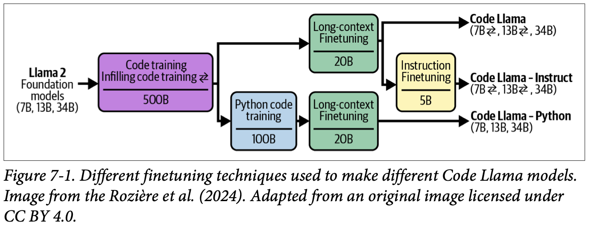
How to read this figure. Start at the left: Llama 2 foundation models (7B, 13B, 34B). All go through code training with infilling (500B tokens; the ⇄ symbol marks sizes trained with infilling). Then three branches: (1) long-context finetuning (20B tokens) gives Code Llama; (2) the same plus instruction finetuning (5B tokens) gives Code Llama – Instruct; (3) extra Python code training (100B) then long-context finetuning (20B) gives Code Llama – Python. Long-context finetuning raised the max context from 4,096 to 16,384 tokens to fit long code files. In the image, "instruction finetuning" means supervised finetuning.
Who finetunes? Both model developers and application developers. Model developers post-train with several finetuning techniques before release, and may release several versions finetuned to different extents so app developers can pick. As an app developer you might finetune a raw pre-trained model, but you will most likely finetune one that is already post-trained. The more refined the model and the more relevant its knowledge to your task, the less work you have to do.
A medical graduate (pre-trained) does a general internship (SFT), then a residency in cardiology (domain continued training), then a fellowship in paediatric cardiology (a narrower finetune). Same person, more and more specialised versions, each building on the last.
Where it breaks: a doctor can do all specialities at once in their head; models often trade off general skill for the specialty.
All these forms use the same machinery (gradient descent on a loss); they differ in data (raw text, pairs, preference triples, long sequences) and in objective (next token, fill-in, preference). Long-context finetuning is the odd one out because the architecture itself (position encoding) must change.
"Name the types of finetuning." Say: "Continued pre-training on raw domain text, supervised finetuning on (instruction, response) pairs, preference finetuning on (prompt, chosen, rejected) triples with RL or similar, infilling finetuning for edit/debug tasks, and long-context finetuning which needs positional-embedding changes. As an app developer I'd usually start from an already instruction-tuned model."
SFT and RLHF in depth: Ch.2, LLM Engineer's Handbook Ch.5, Ch.6 Preference Alignment. Instruction data: Ch.8.
Before picking a technique, ask whether finetuning is right for you at all. Compared with prompting it needs much more data, hardware and ML talent, so it is usually tried after extensive prompt experiments. But the two are not mutually exclusive; real problems often need both.
A small finetuned model can beat a much bigger off-the-shelf model on its task. Grammarly found its finetuned Flan-T5 models (Chung et al., 2022) beat a GPT-3 variant specialised for text editing across many writing-assistant tasks, while being 60× smaller. They used only 82,000 (instruction, output) pairs, less than what training a text-editing model from scratch usually needs.
In the early days, the strongest models were commercial with limited finetuning access, so there were few good models to finetune. Now the open-source community offers high-quality models of every size for many domains, which makes finetuning much more viable and attractive.
A local tailor who only stitches school uniforms beats a famous designer at school uniforms: faster, cheaper, and exactly to the school's spec. Small finetuned models are that specialist tailor.
Where it breaks: ask the uniform tailor for a wedding sherwani and he struggles. The specialist is narrow by design.
Training data decides what a model is good at. If your exact format, dialect or customer queries were rare in pre-training, the model has weak habits there. Finetuning adds many examples of exactly that pattern, so the model's probabilities shift strongly toward it. A small model has less general capacity, but it can spend all of it on your narrow task.
"When would you finetune a smaller model instead of calling a frontier API?" Say: "When the task is narrow and high-volume, so latency and cost matter, and I have or can generate a few thousand good examples. Distilling from a big model's outputs into a 7B–8B model can match it on that task at a fraction of the cost, like Grammarly's Flan-T5 beating a 60× larger GPT-3 variant." For a realtime voice agent, a small finetuned model for intent routing or formatting is a natural fit because latency is everything.
Many gains from finetuning can also be had, to some extent, without it: careful prompts and context improve performance too, and structured output has other techniques (Chapter 2). Here are the costs.
Finetuning for one task can degrade performance on other tasks. That hurts if your app expects many kinds of prompts. (Footnote 1: some call this an alignment tax (Bai et al., 2020), but the term is easy to confuse with the cost of aligning to human preference.)
Example: a model must handle three query types: product recommendations, changing orders, and general feedback. It is good at the first and third but bad at changing orders. You finetune on (query, response) pairs about changing orders. Now it is better there, but may get worse at the other two.
What to do: finetune on all the query types you care about, not just the weak one. If one model still can't do everything well, use separate models per task. To serve them more easily as one, consider merging them (plates 25–31).
Numbers are modelled to show the shape of the problem, not the book's.
If you are just starting a project, finetuning is rarely the first thing to try.
AI engineering experiments should start with prompting, following the best practices (the book says "Chapter 6" here; the prompt best practices are actually in Chapter 5). Try more advanced solutions only if prompting alone is not enough, and test many prompts, because performance varies a lot with the prompt.
A story Huyen hears from many practitioners: someone says prompting doesn't work and insists on finetuning. On inspection, the prompt experiments were minimal and unsystematic: unclear instructions, examples that didn't look like real data, badly defined metrics. After fixing the experiment process, prompting became good enough. (Footnote 3: some engineers know finetuning isn't needed but want to do it to learn; she appreciates the curiosity, but leaders find it hard to tell whether finetuning is needed or just wanted.)
Buying a car vs taking an auto. A car (finetuned model) is great once you have it, but you pay up front, need a licence (ML skills), a parking spot (serving), insurance and servicing (maintenance), and next year a better model is launched. For many trips, an auto (a good prompt on an API model) is enough.
Where it breaks: an auto can't be customised at all, while prompts can be changed every minute for free.
When you update weights only on task B data, the gradient pushes the weights toward whatever helps B, with nothing holding them in place for task A. The shared weights that encoded A's behaviour drift. Mixing data from all tasks puts a "pull" from every task into each update.
"Your PM wants to finetune because the prompt 'isn't working'. What do you do?" Say: "First I check the prompt experiments: are instructions clear, are examples like real traffic, is there a fixed eval set and a clear metric? Often fixing that is enough. If not, I'd list the costs of finetuning: data, training skills, serving, and keeping up with new base models, plus the risk of regressions on other tasks."
Be careful with the argument "general models are bad at domain tasks, so we must finetune or train our own". As general models get stronger, they also get better at domain tasks and can beat domain-specific models.
BloombergGPT (March 2023) is the classic case. Back then the strongest models were all proprietary, and Bloomberg wanted a mid-size model good at finance that it could host in-house for sensitive data. It had 50 billion parameters, took 1.3 million A100 GPU hours, and the compute was estimated at $1.3–2.6 million, not counting data (Wu et al., 2023).
The same month, OpenAI released GPT-4-0314. Li et al. (2023) showed GPT-4-0314 clearly beat BloombergGPT on financial benchmarks. (Footnote 4: "0314" is the release date stamp, March 14; the book's footnote prints the year as 2024, though GPT-4 was released in 2023. Date stamps matter because versions differ a lot.)
| Model | FiQA sentiment analysis (weighted F1) | ConvFinQA (accuracy) |
|---|---|---|
| GPT-4-0314 (zero-shot) | 87.15 | 76.48 |
| BloombergGPT | 75.07 | 43.41 |
Since then several mid-size models comparable to GPT-4 have appeared: Claude 3.5 Sonnet (the book lists 70B parameters), Llama 3-70B-Instruct and Qwen2-72B-Instruct; the last two are open weight and can be self-hosted.
Fairness to Bloomberg: benchmarks don't capture real-world performance, so BloombergGPT may work well for its own use cases, and the team gained valuable experience for building and running future models.
Both finetuning and prompting need systematic processes. Prompt experiments make you build an evaluation pipeline, annotation guidelines and experiment tracking, which are stepping stones to finetuning anyway.
Before prompt caching, one benefit of finetuning was saving tokens. More examples in a prompt means more input tokens, so more latency and cost. Instead, you can finetune on those examples and send short prompts.
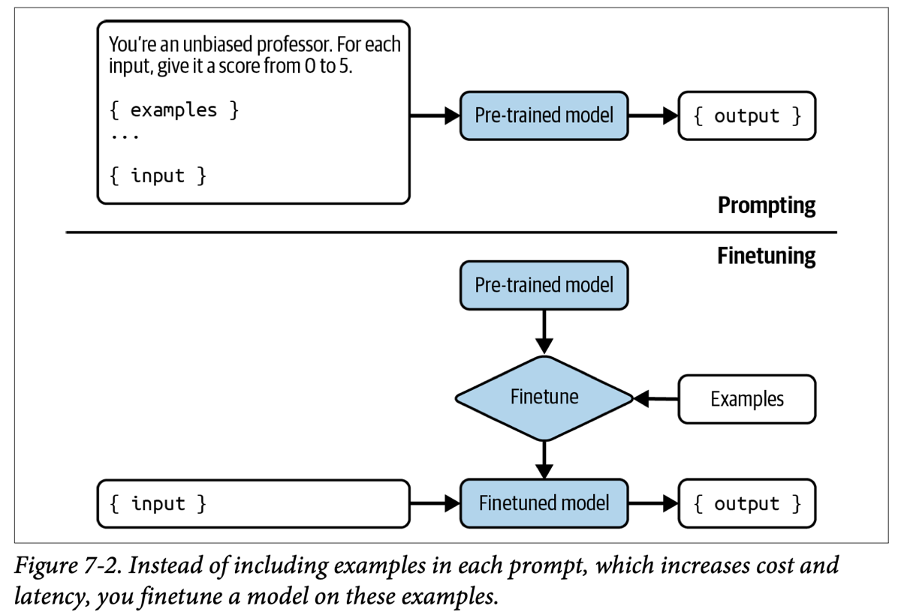
How to read this figure. Top half ("Prompting"): every request carries the instruction ("You're an unbiased professor… score 0 to 5"), all the examples, and the input. Bottom half ("Finetuning"): the examples go into a one-time Finetune step that produces a finetuned model; at request time you send only the input. Same output, much shorter prompts.
With prompt caching (Chapter 9), repeated prompt parts are cached and reused, so this is no longer a strong benefit. But one advantage remains: the number of examples in a prompt is capped by the context length, while finetuning has no limit on how many examples you use.
Assumes 100 tokens of instruction + 100 tokens of input per request. "Cached" assumes the repeated instruction + examples are served from a prompt cache (modelled at 10% of normal input price, a "Beyond the book" assumption; real discounts vary by provider).
A big multi-speciality hospital vs a small clinic that spent years building its own "finance-only" doctor. The clinic was a sensible bet in 2023, but the hospital's general physicians kept getting better and now diagnose the clinic's cases more accurately.
Where it breaks: the clinic still owns its data and can work fully in-house, which a hosted general model may not allow.
Domain skill is largely general reasoning plus domain knowledge. Scaling general models improves the reasoning for every domain at once, and big models have read plenty of finance text too. A custom model must be re-trained to keep up; the general one improves "for free" with every release.
"Should we train our own domain model, like BloombergGPT?" Say: "Probably not first. BloombergGPT cost about $1.3–2.6M in compute and GPT-4 zero-shot beat it on FiQA and ConvFinQA within weeks. I'd benchmark current frontier and open-weight models on our own eval set, then decide. Data privacy or self-hosting needs can still justify it, but now with open 70B-class models you can self-host without training from scratch."
After you have squeezed prompting, should you try RAG or finetuning next? It depends on why the model fails: information-based or behaviour-based failures.
Outputs are factually wrong or outdated. Two scenarios:
Ovadia et al. (2024), "Fine-Tuning or Retrieval?", showed that for up-to-date information (current events), RAG beat finetuned models. More surprising: RAG on the base model beat RAG on finetuned models. Finetuning helps a specific task but can hurt others.
| Base model | Base | Base + RAG | FT-reg | FT-par | FT-reg + RAG | FT-par + RAG |
|---|---|---|---|---|---|---|
| Mistral-7B | 0.481 | 0.875 | 0.504 | 0.588 | 0.810 | 0.830 |
| Llama 2-7B | 0.353 | 0.585 | 0.219 | 0.392 | 0.326 | 0.520 |
| Orca 2-7B | 0.456 | 0.876 | 0.511 | 0.566 | 0.820 | 0.826 |
Semantic parsing (turning natural language into a structured format like JSON) depends on producing exactly the right format, so it often needs finetuning. Strong off-the-shelf models handle common, simple syntaxes (JSON, YAML, regex) well, but may struggle with syntaxes that are rare on the internet: a domain-specific language for a less popular tool, or a complex syntax.
RAG gives the model external knowledge for more accurate, informative answers and helps reduce hallucinations. Finetuning helps the model follow syntaxes and styles. Finetuning can reduce hallucinations with enough high-quality data, but it can also worsen them if the data is poor. (Footnote 5: the Llama 3.1 authors (Dubey et al., 2024) follow the principle that post-training should align the model to "know what it knows" rather than add knowledge.)
If the model has both kinds of problems, start with RAG: no training data to curate, no finetuned model to host. And start RAG simple: term-based search like BM25 before vector databases.
RAG can also give a bigger boost: Ovadia et al. showed RAG beat finetuning for almost all question categories in MMLU for Mistral 7B, Llama 2-7B and Orca 2-7B. But they combine: adding RAG on top of a finetuned model improved MMLU performance 43% of the time; in the other 57%, RAG + finetuned model did no better than RAG alone.
A call-centre agent. If they don't know today's train timings, give them the live IRCTC screen (RAG). If they know the timings but keep speaking rudely or forget the greeting script, send them to soft-skills training (finetuning). Training them on timings would be silly: tomorrow's timings change.
Where it breaks: a human can be trained on facts and remember them; models trained on facts can memorise poorly or hallucinate more if the data is weak.
Facts change and are numerous; putting them in the prompt at query time keeps them fresh and checkable. Format and style are stable habits spread over every token the model writes; they are best encoded in weights. That's why "form vs facts" works as a split.
"RAG or finetuning?" Say: "Diagnose the failure. Missing or outdated facts are information failures, so RAG. Wrong format, style or relevance are behaviour failures, so finetuning. If both, RAG first since it needs no training data or model hosting. Ovadia et al. found base-model RAG even beat finetuned-model RAG on current events, and RAG on top of finetuning helped only 43% of the time." For a RAG-memory voice agent, this is exactly the split: memory retrieval for facts, finetuning only if the spoken style or tool-call format is off.
RAG design (BM25, embeddings, hybrid): Ch.6, Hands-On LLMs Ch.8, LLM Engineer's Handbook Ch.4. Hallucination and data quality: Ch.8.
There's no universal workflow. Figure 7-3 shows some paths a project might take over time; the arrows show possible next steps. It is inspired by an example workflow from OpenAI (2023).
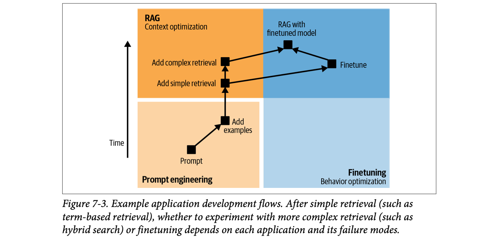
How to read this figure. Time goes upward. Bottom-left (light orange) is prompt engineering: start with a prompt, then add examples. Top-left (orange) is RAG = context optimisation: add simple retrieval, maybe complex retrieval. Right side (blue) is finetuning = behaviour optimisation. From "add simple retrieval" the path forks: more complex retrieval, or finetune. Both forks can end at RAG with a finetuned model in the top-right.
Before any adaptation step, define your evaluation criteria and build an evaluation pipeline (Chapter 4). You use it to measure progress at every step, not only at the start. Then:
If, after weighing all of this, you decide to finetune, the rest of the chapter is for you, starting with finetuning's number one challenge: memory.
Fixing a slow kitchen: first give clearer orders (prompt), then show photos of finished dishes (examples), then put a recipe book on the counter (simple RAG). If dishes still lack facts (wrong ingredients) get a better index (advanced RAG); if they still look wrong (plating, portions) train the cooks (finetune).
Where it breaks: kitchens rarely have an automated taste-test after every change; your eval pipeline should.
"Walk me through how you'd improve an LLM feature from v0." Say: "Eval set and metrics first. Then prompt iterations with versioning, then few-shot examples, then simple BM25 retrieval if facts are missing. If information failures remain, embedding or hybrid retrieval; if behaviour failures remain, finetune. Finally combine. Each step is gated on eval results, and I keep in mind that advanced RAG adds inference complexity while finetuning adds development complexity."
Finetuning is memory-intensive, so many techniques exist to cut its memory footprint. Knowing what uses the memory tells you why these techniques work and which one to pick. This section also gives back-of-the-napkin formulas for the memory a model needs, useful for deciding what hardware you need to serve or finetune it. It is technically dense; Huyen says you can skip it if you know the concepts, and gives these takeaways for skimmers:
Moving house in a tempo. Inference is moving the furniture (weights). Finetuning is moving the furniture plus a notebook entry for every item saying how to rearrange it (gradients) plus two more notebooks of running notes (optimizer states). Fewer items to rearrange (PEFT) or smaller items (quantization) means a smaller tempo.
Where it breaks: in a real move the notes are tiny; in training each "note" is as big as the parameter itself.
"What determines how much GPU memory finetuning needs?" Say: "Total parameters times bytes per value for the weights, plus for every trainable parameter a gradient and optimizer states (two for Adam), plus activations. So you cut memory by training fewer parameters (LoRA) or using fewer bits (quantization, mixed precision), or by recomputing activations."
A key factor in finetuning memory is the number of trainable parameters: parameters that can be updated during finetuning. In pre-training, all parameters are updated. In inference, none are. In finetuning, some or all are. The ones kept unchanged are frozen parameters.
Why does each trainable parameter cost extra memory? Because of how networks are trained: backpropagation. (Footnote 6: alternatives exist, such as evolutionary strategies, e.g. Maheswaranathan et al. combining random search with surrogate gradients, and direct feedback alignment (Arild Nøkland, 2016).) Each training step has two phases:
Inference runs only the forward pass; training runs both. The backward pass, at a high level:
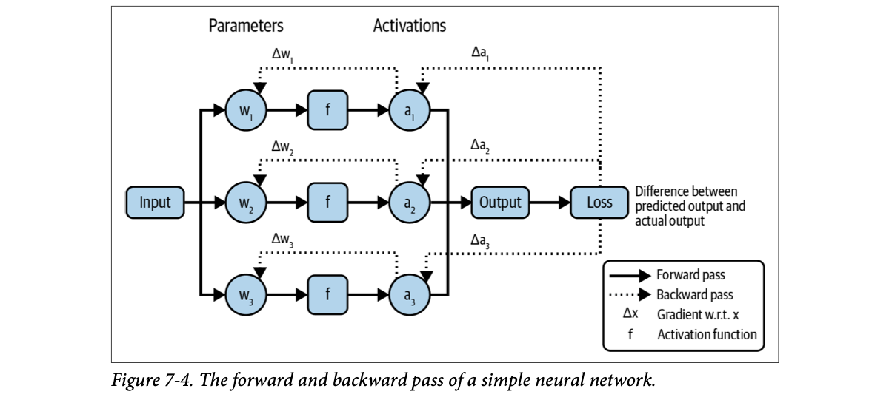
How to read this figure. A toy network with three parameters (w₁, w₂, w₃) and one nonlinear activation function f. Solid arrows = forward pass: input → each w → f → activations a₁, a₂, a₃ → output → loss (difference between predicted and actual output). Dotted arrows = backward pass: from the loss, gradients Δa (gradient with respect to each activation) flow back, and then Δw for each parameter. The point: during the backward pass each trainable parameter gets extra companions: its gradient and its optimizer states. More trainable parameters, more of these to store.
A 3-weight toy like the figure: aᵢ = tanh(wᵢ·x), output = a₁+a₂+a₃, loss = (output − target)². Numbers are computed live; the network is our own example.
A cricket team reviewing a lost match. Forward pass: play the match. Loss: lost by 40 runs. Gradient: how much each player's mistakes contributed (the dropped catch counts more than a slow single). Optimizer: the coach deciding how strongly to change each player's training, remembering past matches (Adam's memory of earlier gradients).
Where it breaks: the coach blames a few players; backprop computes an exact "blame" number for every one of billions of parameters, every step.
The chain rule lets you compute every gradient in one backward sweep, reusing the activations saved from the forward pass. That is why training must keep activations in memory (plate 12), and why each trainable weight needs a matching gradient slot. Adam keeps two running statistics per weight (momentum-like average and squared-gradient average), so Adam training stores roughly 1 (weight) + 1 (gradient) + 2 (states) values per trainable parameter.
"Why does training need so much more memory than inference?" Say: "Inference runs only the forward pass, so it needs weights plus activations/KV cache. Training also runs the backward pass: it keeps activations for gradient computation, one gradient per trainable parameter, and optimizer states, two per parameter for Adam. Freezing parameters removes their gradients and states, which is the whole idea behind PEFT."
Turning this into GB: plate 12. Learning rate as the step size: plate 33. Backprop basics with visuals: Hands-On LLMs Ch.3.
Knowing how much memory a model needs lets you pick hardware, or check whether hardware you already own can run it. If a model needs 30 GB for inference, a 24 GB chip won't do.
The real footprint depends on the model, the workload and the optimisations used, which can't all be modelled, so these are approximate formulas for inference and training. (Side note: inference and training having different memory profiles is one reason chips for training and for inference are diverging; see Chapter 9.)
Inference runs only the forward pass, which needs memory for the weights. With N = parameter count and M = memory per parameter:
The forward pass also needs memory for activations, and transformers need memory for the attention key-value vectors. Both grow linearly with sequence length and batch size. For many apps you can assume they take about 20% of the weights' memory (more with longer contexts or bigger batches):
13B parameters at 2 bytes: 13B × 2 = 26 GB of weights. Total ≈ 26 × 1.2 = 31.2 GB. A 70B model at 2 bytes needs a "whopping" 140 GB just for weights.
Memory grows fast with size, so as models get bigger, memory becomes the bottleneck. (Footnote 8: some say you aren't doing AI until you've seen "RuntimeError: CUDA out of memory". Footnote 9: for more on inference memory, Carol Chen's "Transformer Inference Arithmetic", kipply's blog, March 2022.)
A wedding hall. The guests are the weights (fixed). Plates, chairs and serving counters are the activations and KV cache: more guests arriving at once (batch) or longer meals (sequence length) need more of them. The 20% rule is "book a hall 20% bigger than the guest count".
Where it breaks: for very long contexts the KV cache can exceed the weights, so 20% is only a default.
"Can we serve Llama-70B on one 80 GB GPU in FP16?" Say: "No: 70B × 2 bytes is 140 GB for weights alone, and with ~20% for activations/KV it's ~168 GB. You'd need at least two or three 80 GB GPUs with tensor parallelism, or quantize to 8-bit (~70 GB weights, still tight) or 4-bit (~35 GB weights)."
KV cache sizing and inference chips: Ch.9, LLM Engineer's Handbook Ch.8. Full calculator: next plate.
Training needs memory for weights and activations (as above) plus gradients and optimizer states, which scale with the number of trainable parameters:
During the backward pass each trainable parameter needs one value for its gradient plus zero to two values for optimizer states:
| Optimizer | States per trainable param | Values per trainable param (grad + states) |
|---|---|---|
| Vanilla SGD | 0 | 1 |
| Momentum | 1 | 2 |
| Adam | 2 | 3 |
Full update of a 13B model with Adam, 2 bytes per value: gradients + optimizer states = 13B × 3 × 2 bytes = 78 GB. With only 1B trainable parameters: 1B × 3 × 2 = 6 GB. That 13× gap is the whole argument for PEFT.
One caveat: that formula assumed activations take less memory than weights. In reality, if activations are stored for gradient computation, they can dwarf the weights. Figure 7-5 shows this for Megatron models (Korthikanti et al., 2022, "Reducing Activation Recomputation in Large Transformer Models").
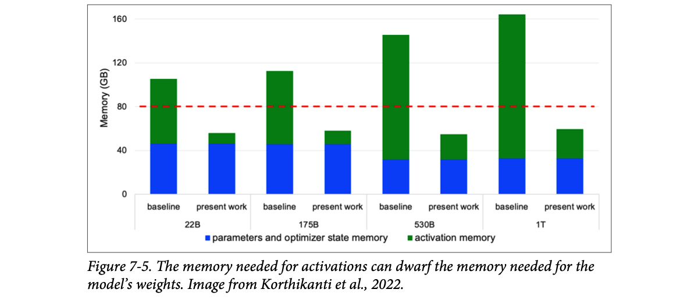
How to read this figure. Four model sizes (22B, 175B, 530B, 1T); each has a "baseline" and a "present work" bar (memory per GPU in the paper's parallel setup). Blue = parameters + optimizer state memory (about 30–45 GB). Green = activation memory. In the baselines the green part is larger than the blue, pushing totals to roughly 105–165 GB, above the red dashed 80 GB line (one large GPU). The paper's technique ("present work") cuts activation memory so every bar fits under 80 GB.
One way to cut activation memory: don't store them; recompute activations when needed. This is gradient checkpointing or activation recomputation. It saves memory but makes training slower because of the recomputation. (Footnote 10: for more, EleutherAI's "Transformer Math 101", Anthony et al., April 2023.)
Implements the book's formulas. Presets reproduce the book's own numbers. Activation memory is a rough % of weight memory you choose (the book uses 20% for inference and warns training activations can be far larger).
A school exam hall. Weights are the students. Gradients are each student's answer sheet; Adam's states are two rough sheets per student. Activations are everything written on the blackboard during the exam that must stay up until marking. Gradient checkpointing is wiping the blackboard and rewriting it when the examiner needs it: less space, more time.
Where it breaks: frozen students (frozen parameters) still sit in the hall (weights memory) but get no answer sheets.
Gradients need the intermediate activations from every layer of the forward pass, and those scale with batch × sequence length × hidden size × layers, not with parameter count. That's why activation memory can exceed weight memory at long sequence lengths, and why recomputation (store a few checkpoints, recompute the rest during backward) trades compute for memory.
"Estimate the memory to fully finetune a 7B model with Adam in 16-bit." Say: "Weights 7B × 2 = 14 GB; gradients + Adam states 7B × 3 × 2 = 42 GB; total 56 GB before activations. That's beyond consumer GPUs (12–24 GB). Options: LoRA to shrink trainable params, quantize the base weights (QLoRA), gradient checkpointing for activations, or offload to CPU with DeepSpeed." (Beyond the book: real mixed-precision Adam setups often keep FP32 master weights and FP32 states, which is closer to 16 bytes per parameter; the book's 2-bytes-per-value is the simple estimate.)
So far we assumed 2 bytes per value. The bytes per value feed directly into the footprint: halve the bytes, halve the weight memory. First, how numbers are stored.
Neural-network values are traditionally floating-point numbers. The most common family is FP, following the IEEE 754 standard (Institute of Electrical and Electronics Engineers standard for floating-point arithmetic):
FP32 and FP16 are the common ones. Other popular AI formats: BF16 (BFloat16), designed by Google for performance on TPUs (footnote 11: Google called it the "secret" to high performance on Cloud TPUs), and TF32 (TensorFloat-32), designed by NVIDIA for GPUs.
Numbers can also be integers, increasingly popular though less common than floats: INT8 (8-bit) and INT4 (4-bit). (Footnote 12: integer formats are also called fixed-point formats.)
A float usually has 1 sign bit (positive or negative); the remaining bits split between (footnote 13: range bits are called the exponent, precision bits the significand):
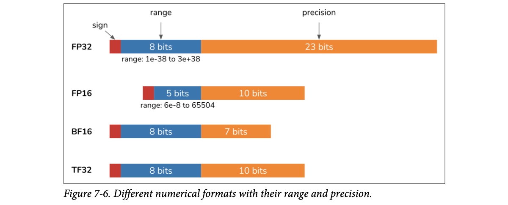
How to read this figure. Red = sign bit, blue = range (exponent) bits, orange = precision (significand) bits. FP32: 1 + 8 + 23, range about 1e-38 to 3e+38. FP16: 1 + 5 + 10, range only about 6e-8 to 65,504. BF16: 1 + 8 + 7, the same range as FP32 but less precision. TF32: 1 + 8 + 10, FP32's range with FP16's precision. Footnote 14: TF32 actually uses 19 bits, not 32; Huyen guesses the name signals compatibility with FP32 (an ex-NVIDIA coworker's guess: people distrust weird 19-bit formats, so "TF32" sounds friendlier). She jokes the name keeps her up at night.
Type a number. It is first stored as FP32, then converted. FP16 and BF16 use round-to-nearest-even and reproduce Table 7-3 exactly. The book's TF32 column matches truncating the extra bits, so this tool truncates for TF32 to match the table (our observation, not a statement from the book).
More bits = higher precision. Converting from a high-precision to a low-precision format (FP32 → FP16) reduces precision, which can change values or cause errors:
| FP32 | FP16 | BF16 | TF32 |
|---|---|---|---|
| 0.0123456789 | 0.0123443603515625 | 0.0123291 | 0.0123443603515625 |
| 0.123456789 | 0.12347412109375 | 0.123535 | 0.1234130859375 |
| 1.23456789 | 1.234375 | 1.23438 | 1.234375 |
| 12.3456789 | 12.34375 | 12.375 | 12.34375 |
| 123.456789 | 123.4375 | 123.5 | 123.4375 |
| 1234.56789 | 1235.0 | 1232.0 | 1234.0 |
| 12345.6789 | 12344.0 | 12352.0 | 12344.0 |
| 123456.789 | INFa | 123392.0 | 123456.0 |
| 1234567.89 | INF | 1236990.0 | 1233920.0 |
BF16 and FP16 both use 16 bits, but BF16 spends more on range and less on precision. So BF16 can hold big values that overflow FP16 (123,456.789 → INF in FP16 but 123,392 in BF16), yet it is less precise: 1234.56789 becomes 1235.0 in FP16 (0.035% change) but 1232.0 in BF16 (0.208% change).
Loading a model in the wrong numerical format can change it a lot. Llama 2 shipped with weights in BF16, but many teams loaded it in FP16 and found quality much worse than advertised. It wasted time, but taught many people about number formats. (Footnote 15: the FP16/BF16 confusion continued with Llama 3.1, with discussions on X/Threads, a llama.cpp benchmark, and write-ups by "the Bloke" and Raschka.)
The right format depends on the distribution of values in your workload (the range you need), how sensitive it is to small numerical changes, and the hardware. (Footnote 16: designing number formats is a fascinating field; a lower-precision format that doesn't hurt quality makes systems cheaper and faster and can enable new use cases.)
Writing amounts on a cheque with a fixed number of boxes. FP16 gives you many boxes after the decimal point but few before it: you can write ₹1,234.56 precisely but not ₹1,23,456 at all. BF16 gives many boxes before the decimal and few after: you can write ₹12 lakh but only as "about ₹12.37 lakh".
Where it breaks: floats don't have fixed decimal places; precision is relative (about 3 significant digits for BF16, about 3–4 for FP16) wherever the number sits.
"FP16 vs BF16 for training?" Say: "Same 16 bits, different split. FP16 has 5 exponent bits so values above 65,504 overflow to infinity; BF16 has FP32's 8 exponent bits, so it rarely overflows but has only 7 mantissa bits. For training, overflow is the bigger danger, so BF16 is popular. And always load weights in the dtype the model was released in; Llama 2 in FP16 instead of BF16 lost quality."
Using fewer bits: plate 14. 4-bit NF4 in QLoRA: plate 24. Quantization for serving: Ch.9, Hands-On LLMs Ch.12.
Fewer bits per value means less memory. A 10B model in a 32-bit format needs 40 GB for weights; in 16-bit, 20 GB. Reducing precision, a.k.a. quantization, is cheap and extremely effective, simple to do, and works across tasks and architectures. In ML, "low precision" generally means any format with fewer bits than the standard FP32.
Strictly, it is "quantization" only if the target format is an integer. In practice the word is used for any conversion to a lower-precision format, and the book follows that usage.
Two decisions:
The book doesn't describe a specific integer scheme. This shows the common "absmax" idea: scale weights so the largest magnitude maps to 127, round to integers, and multiply back by the scale when computing. Weights are random, modelled.
Try raising the outlier (marked *): the scale grows, every normal weight gets coarser, and the error jumps, especially at 4 or 2 bits. That's one reason "many small changes can cause a big performance change" (plate 15).
Rounding prices at a kirana shop to the nearest rupee: ₹12.37 becomes ₹12. Fine for one item; over a big bill the small differences add up. And if one item costs ₹50,000, rounding to the nearest ₹500 to keep the same number of digits ruins the small items.
Where it breaks: real quantizers use per-channel or per-group scales to dodge the outlier problem.
"What is quantization and what do you usually quantize?" Say: "Storing values with fewer bits, e.g. FP16 → INT8/INT4. Most commonly post-training quantization of the weights, since weights dominate memory and weight quantization is more stable than activation quantization. It's the cheapest memory win: a 10B model goes from 40 GB in FP32 to 20 GB in 16-bit, and lower still in 8 or 4 bits."
Inference vs training quantization: plates 15 and 16. Serving quantized models: Ch.9, LLM Engineer's Handbook Ch.8.
Early deep learning trained and served models in 32-bit FP32. Since the late 2010s, serving in 16 bits and lower has become common. Dettmers et al. did key work: LLM.int8() (2022) for 8 bits and QLoRA (2023) for 4 bits.
Models can also be served in mixed precision: lower precision where possible, higher where necessary. Apple (2024) served on-device models with a mix of 2-bit and 4-bit formats, averaging 3.5 bits per weight. Also in 2024, NVIDIA announced its Blackwell GPU architecture with support for 4-bit float inference.
At 8 bits and below things get trickier. You can stay with floats using minifloat formats like FP8 and FP4 (footnote 18: 4 bits is the smallest float that still follows all IEEE principles). More commonly, values are converted to integers: INT8 or INT4.
There's a floor: you can't go below 1 bit per value. 1-bit attempts include BinaryConnect (Courbariaux et al., 2015), Xnor-Net (Rastegari et al., 2016) and BitNet (Wang et al., 2023). (Footnote 19: Xnor-Net's authors spun off Xnor.ai, which Apple acquired in early 2020 for a reported $200M.) In 2024, Microsoft researchers (Ma et al.) declared the era of 1-bit LLMs with BitNet b1.58: 1.58 bits per parameter, with performance comparable to 16-bit Llama 2 up to 3.9B parameters.
| Model | Size | ARCe | ARCc | HS | BQ | OQ | PQ | WGe | Avg. |
|---|---|---|---|---|---|---|---|---|---|
| Llama LLM | 700M | 54.7 | 23.0 | 37.0 | 60.0 | 20.2 | 68.9 | 54.8 | 45.5 |
| BitNet b1.58 | 700M | 51.8 | 21.4 | 35.1 | 58.2 | 20.0 | 68.1 | 55.2 | 44.3 |
| Llama LLM | 1.3B | 56.9 | 23.5 | 38.5 | 59.1 | 21.6 | 70.0 | 53.9 | 46.2 |
| BitNet b1.58 | 1.3B | 54.9 | 24.2 | 37.7 | 56.7 | 19.6 | 68.8 | 55.8 | 45.4 |
| Llama LLM | 3B | 62.1 | 25.6 | 43.3 | 61.8 | 24.6 | 72.1 | 58.2 | 49.7 |
| BitNet b1.58 | 3B | 61.4 | 28.3 | 42.9 | 61.5 | 26.6 | 71.5 | 59.3 | 50.2 |
| BitNet b1.58 | 3.9B | 64.2 | 28.7 | 44.2 | 63.5 | 24.2 | 73.2 | 60.5 | 51.2 |
How to read it: at 700M and 1.3B, BitNet is slightly behind on average (44.3 vs 45.5; 45.4 vs 46.2); at 3B it is slightly ahead (50.2 vs 49.7), and the 3.9B BitNet reaches 51.2. Why "1.58"? (Beyond the book: each weight takes one of three values {−1, 0, +1}, and log₂3 ≈ 1.58 bits.)
Each conversion usually changes a value a little, and many small changes can add up to a big performance change. Values outside the format's range may become infinity or an arbitrary value, degrading quality further. Reducing precision with minimal quality loss is active research for model developers, hardware makers and app developers.
Inference in lower precision is now standard: train in higher precision for best performance, then reduce precision for inference. PyTorch, TensorFlow and Hugging Face transformers offer PTQ in a few lines of code. Some edge devices only support quantized inference, so on-device frameworks like TensorFlow Lite and PyTorch Mobile also offer PTQ.
Compressing a family photo album for WhatsApp. At high quality it looks identical; at medium you barely notice; at the lowest setting faces blur. BitNet is like a sketch artist who draws in only three shades and still captures faces well, because he trained that way from the start.
Where it breaks: a JPEG doesn't need to "think" with the compressed pixels; a quantized model computes with them, so errors compound through layers.
"Does quantizing to INT4 always make inference faster?" Say: "Usually it saves memory and lets you run bigger batches, and lower-bit math is faster, but not always: dequantization/format conversion costs compute, and hardware must support the format. Quality can also drop because small rounding errors add up and out-of-range values overflow. So I benchmark both latency and quality on my eval set."
Quantizing during training is less common than PTQ but gaining traction. It has two distinct goals (a technique may help one or both):
Why is backprop sensitive? (Footnote 20) Weights are updated over many steps, so small rounding changes compound, making it hard to reach good performance. And loss values need precise computation: small errors in the loss can point updates in the wrong direction.
Which parts should be low precision can be set automatically with automatic mixed precision (AMP), offered by many ML frameworks. (Footnote 21: Huyen's team at NVIDIA worked a lot on mixed-precision training; see "Mixed Precision Training for NLP and Speech Recognition with OpenSeq2Seq", Huyen et al., NVIDIA Developer Technical Blog, October 2018.)
Different training phases can use different precision. A model can be trained in higher precision but finetuned in lower precision. This is common for foundation models: the team training from scratch has compute for high precision; after release, developers with less compute finetune it in lower precision.
A weight starts at 1.0 and gets 1,000 tiny updates of −0.0001 each (true end value 0.9). We store the weight in each format after every step. Our simulation, not the book's; it shows footnote 20's point.
Saving ₹1 a day in a piggy bank that only accepts ₹10 notes. Each day the ₹1 rounds to zero and nothing accumulates. Mixed precision is keeping an exact notebook tally (high-precision master weights) and converting to notes only when you spend.
Where it breaks: real optimizers also use loss scaling and other tricks; this is only the core intuition.
"What is mixed-precision training and why not train fully in FP16?" Say: "Keep a high-precision master copy of the weights and do most math (activations, gradients) in 16-bit or 8-bit. Fully low-precision training is risky because tiny updates get rounded away and errors compound across steps, and the loss needs precise computation. Frameworks' AMP picks which ops run in low precision. QAT is different: it simulates low precision during training so the model survives quantization at inference."
Finetuning in lower precision is what QLoRA does: plate 24. Training infra: LLM Engineer's Handbook Ch.5.
The more memory finetuning needs, the fewer people can afford it. Techniques that shrink the footprint make finetuning accessible. This section is about memory-efficient finetuning, centred on parameter-efficient finetuning. It also covers model merging: more experimental, and not usually called finetuning, but complementary: finetuning tailors one model; merging combines several (often finetuned) models for the same purpose. Huyen says new model types and finetuning methods have inspired so many creative merging techniques that this was a fun part to write.
When models were small, people finetuned the whole thing: full finetuning, where trainable parameters = all parameters. It looks like training; the difference is that training starts from random weights and finetuning from already-trained weights.
Consumer GPUs usually have 12–24 GB; higher-end ones up to 48 GB. 56 GB doesn't fit.
Either shrink the footprint (quantization, PEFT) or use the hardware's memory better. Example of the latter: CPU offloading: instead of fitting everything on GPUs, move the excess to CPU memory, as DeepSpeed does (Rasley et al., 2020).
Full finetuning, especially SFT and preference finetuning, also typically needs lots of high-quality annotated data that most people can't afford.
Because of memory and data costs, people began partial finetuning: update only some parameters. With ten layers you might freeze the first nine and train only the last, cutting trainable parameters to 10%. (Footnote 22: people usually finetune the layers closest to the output, since those are more task-specific, while earlier layers capture more general features.)
It saves memory but is parameter-inefficient: it needs many trainable parameters to get close to full finetuning. Houlsby et al. (2019) showed that with BERT large you'd need to update about 25% of the parameters to match full finetuning on the GLUE benchmark.
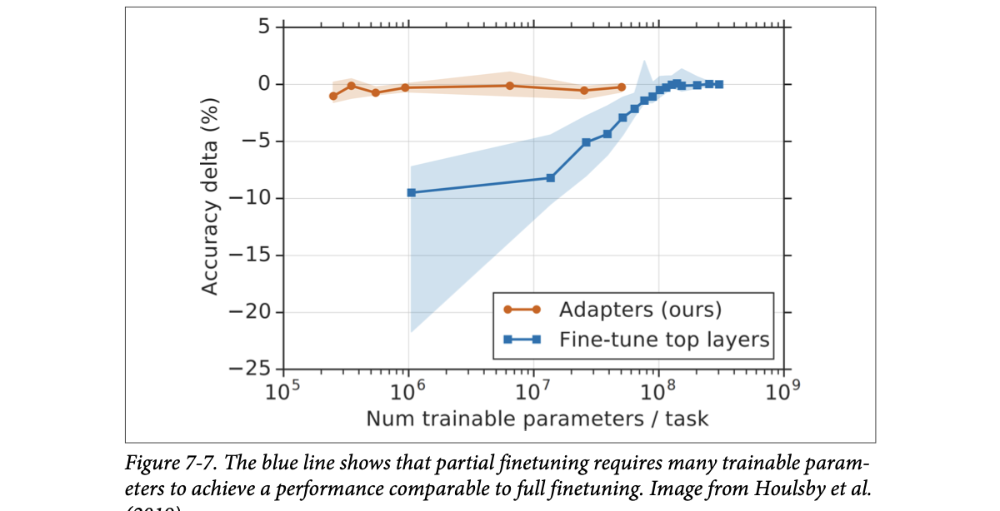
How to read this figure. X axis: trainable parameters per task, log scale (10⁵ to 10⁹). Y axis: accuracy gap vs full finetuning (0 = as good as full). Blue ("fine-tune top layers", partial finetuning): about −10% at 10⁶ parameters and only reaches ~0 near 10⁸. Orange ("Adapters", next plate): already within about 1% of full finetuning at a few 10⁵ parameters and stays near 0. Shaded bands show variation. Same accuracy, roughly 100× fewer parameters with adapters.
A modelled 7B model with 32 equal layers, 16-bit values, Adam. Click a layer to toggle trainable (orange) / frozen (grey).
Retraining a cricket team for T20 by replacing only the last few batters in the order (partial finetuning). It helps a little, but to really change the team's style you'd have to replace a quarter of the squad. Adapters are instead like giving every player a short T20-specific drill: cheap, and it changes how the whole team plays.
Where it breaks: players can't be "frozen"; layers can.
"Why not just finetune the last few layers?" Say: "It does save memory, but it's parameter-inefficient: Houlsby et al. found you need about 25% of BERT-large's parameters to match full finetuning on GLUE. Adapter-style PEFT gets within 0.4% with about 3%, and LoRA goes much lower."
Memory math behind 56 GB: plate 12. Adapters: next plate. Freezing layers for classification: Hands-On LLMs Ch.11.
The question became: how do you get close to full-finetuning quality with far fewer trainable parameters? Techniques from this quest are parameter-efficient. There's no strict threshold, but generally a technique counts if it gets close to full finetuning with several orders of magnitude fewer trainable parameters.
The idea of PEFT came from Houlsby et al. (2019): insert extra parameters into the model in the right places, and you can finetune well with few trainable parameters. They inserted two adapter modules into each transformer block of BERT.
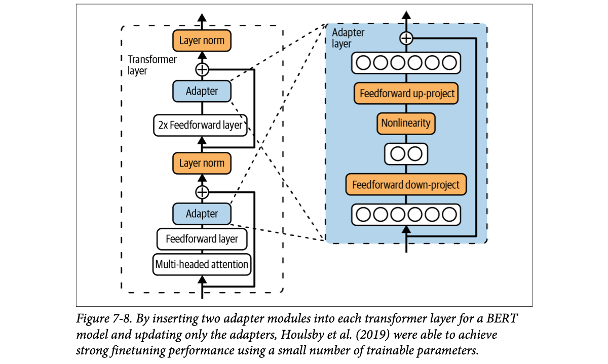
How to read this figure. Left: one transformer layer, bottom to top: multi-headed attention → feedforward → Adapter → add (residual) → layer norm → 2× feedforward → Adapter → add → layer norm. Right: what's inside an adapter: the wide input (six circles) is projected down to a tiny bottleneck (two circles), passed through a nonlinearity, projected back up to the original width, and the input is added back via a skip connection. The orange boxes are the trainable parts; the bottleneck keeps them small.
During finetuning they kept the original parameters unchanged and updated only the adapters, so trainable parameters = adapter parameters. On GLUE they got within 0.4% of full finetuning using only 3% of the trainable parameters. (The orange line in Figure 7-7 shows this for different adapter sizes.)
The downside: higher inference latency. Adapters add layers, so the forward pass has more steps.
PEFT makes finetuning possible on cheaper hardware, so many more developers can do it. PEFT methods are usually also sample-efficient: full finetuning may need tens of thousands to millions of examples for notable gains, while some PEFT methods do well with a few thousand. Given this appeal, PEFT techniques are developing fast.
Hidden width d = 1024, 24 layers, 2 adapters per layer. One adapter = down (d×b) + up (b×d), ignoring small bias terms. BERT-large has ~340M params (Beyond the book).
A plug-in adapter for a foreign socket. You don't rewire the house (frozen weights); you add a small device in the path (adapter) that converts what flows through. Cheap and removable, but the current now passes through one more box (latency).
Where it breaks: an electrical adapter doesn't learn; a PEFT adapter is trained.
The bottleneck forces the adapter to learn a small correction in a low-dimensional space; the skip connection means a near-zero adapter leaves the original model unchanged, so training starts from the pre-trained behaviour and only nudges it.
"What was the original adapter idea and its drawback?" Say: "Houlsby 2019: insert small bottleneck MLP modules with residual connections into each transformer layer and train only them. Within 0.4% of full finetuning on GLUE with 3% of the parameters. Drawback: extra layers at inference add latency, which LoRA later fixed by making the update mergeable."
LoRA removes the latency: plate 20. Transformer block anatomy: Ch.2, Hands-On LLMs Ch.3.
PEFT methods mostly fall into two buckets (newer ones will likely appear):
Some describe soft prompting as a crossover between prompt engineering and finetuning.
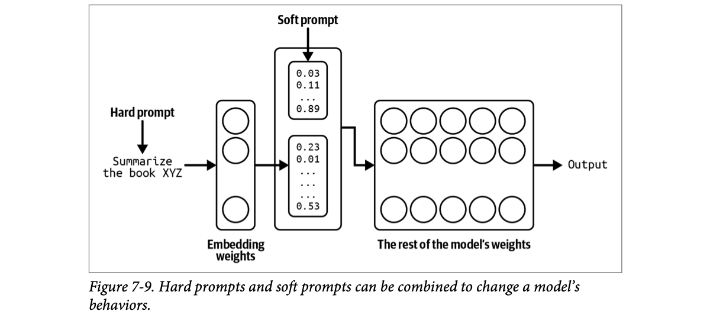
How to read this figure. The hard prompt ("Summarize the book XYZ") goes through the embedding weights and becomes a column of vectors (0.23, 0.01, … 0.53). The soft prompt (0.03, 0.11, … 0.89) is a block of vectors that never came from words; they are learned directly. Both are stacked and fed into the rest of the (frozen) model to produce the output. Only the soft-prompt numbers are trained.
Soft prompt tuning has similar-sounding techniques: prefix-tuning (Li and Liang, 2021), P-Tuning (Liu et al., 2021) and prompt tuning (Lester et al., 2021). (Footnote 23: Huyen has never met anyone who could explain the differences on the spot.) They differ mainly in where the soft tokens go: prefix-tuning prepends soft tokens to the input at every transformer layer; prompt tuning prepends them only to the embedded input. Many PEFT frameworks implement them out of the box.
To see what people actually use, Huyen analysed over 1,000 open issues on GitHub's huggingface/peft in October 2024, assuming people who use a technique are more likely to file issues or ask about it. For "P-Tuning" she searched both "p_tuning" and "p tuning".
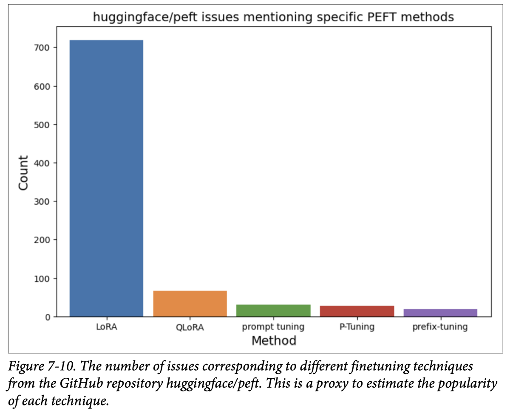
How to read this figure. One bar per method; height = number of issues mentioning it. LoRA ≈ 720 towers over everything; QLoRA ≈ 70; prompt tuning ≈ 30, P-Tuning ≈ 28, prefix-tuning ≈ 20 (values read off the chart). It's a popularity proxy, not a quality measure.
LoRA clearly dominates. Soft prompts are less common but attract growing interest from people who want more customisation than prompting without investing in finetuning. The next plates focus on LoRA: how it works and how it fixes early adapters' latency problem. Even if you don't use LoRA, it's a framework for understanding other methods.
Hard prompt: telling a new employee "be polite and brief" in words. Soft prompt: a secret hand signal you invented and trained them on, that means exactly "the tone our top customers like". Nobody else can read the signal, but it works better than words.
Where it breaks: the hand signal is still a few numbers; it can't add knowledge the model lacks.
"What's the difference between a soft prompt and a hard prompt?" Say: "Hard prompts are discrete human-readable tokens and fixed; soft prompts are continuous embedding vectors trained by backprop while the model stays frozen. Prompt tuning adds them at the input embeddings; prefix-tuning adds them at every layer. In practice LoRA is far more popular."
Prompt engineering (hard prompts): Ch.5. Embeddings: Hands-On LLMs Ch.2. LoRA: next plate.
Unlike Houlsby's adapters, LoRA (Low-Rank Adaptation, Hu et al., 2021) adds parameters without extra inference latency. Instead of adding layers, it uses modules that can be merged back into the original layers.
LoRA is applied to individual weight matrices. It represents an update as the product of two smaller matrices, trains those, then merges them back. For a weight matrix W of size n × m:
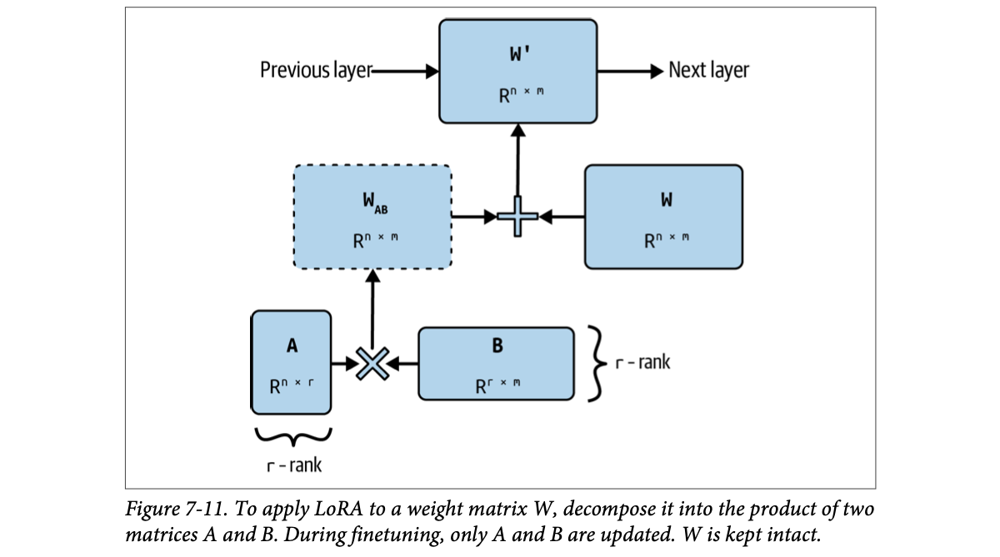
How to read this figure. Bottom: A (ℝn×r, tall and thin) and B (ℝr×m, short and wide), each with the small "r-rank" dimension marked, are multiplied (×) into WAB (n×m, dashed: it's computed, not stored as trainable). That is added (+) to the frozen W (n×m) to make W′, which sits between the previous and next layer.
LoRA builds on low-rank factorization, a long-standing dimensionality-reduction technique: write a large matrix as the product of two smaller ones to cut parameters, and so computation and memory. A 9 × 9 matrix (81 parameters) can be factorised into 9 × 1 and 1 × 9 matrices: 18 parameters combined. The shared inner dimension is the rank of the factorization. The original is full-rank; the two small matrices are a low-rank approximation. It's lossy: higher rank preserves more of the original.
Like the original adapters, LoRA is parameter-efficient and sample-efficient, and the factorization lets it use even fewer trainable parameters. The LoRA paper showed that for GPT-3, LoRA matched or beat full finetuning on several tasks with only about 4.7M trainable parameters, 0.0027% of full finetuning.
For square projection matrices of width d: each LoRA'd matrix adds d×r + r×d = 2·d·r parameters. Presets use the book's numbers.
Check against the book: GPT-3 preset gives 196,608 per layer and 18,874,368 total, exactly as on pdf p366. One 4096×4096 matrix at r=8 gives 65,536 (pdf p368). For Llama 2 13B (d = 5,120, 40 layers; Beyond the book), Q+K at r=2 gives 1.64M, while all four matrices give 3.28M, the number Table 7-6 prints for "r=2, query & key". So the table's count matches four matrices (or Q+K at r=4); we report both rather than pick one.
Altering a ready-made kurta instead of stitching a new one. The kurta (W) stays; the tailor adds a thin strip of fabric (A·B) along a few seams. The strip is tiny compared to the kurta, but it changes the fit. And because it's stitched in (merged), it doesn't make the kurta heavier to wear.
Where it breaks: a strip can only make certain kinds of changes; low rank means the update is limited to a few "directions".
Gradients and Adam states exist only for A and B, so the training overhead is 2·d·r per matrix instead of d². After training, A·B is just an n×m matrix you can add into W once, so inference runs on a single W′, exactly as fast as the original. (Beyond the book: common implementations start B at zero so W′ = W at step 0, and apply the update as x·W + (α/r)·x·A·B during training.)
# Illustrative pseudo-code (our own names, not the book's)
def lora_forward(x, W_frozen, A, B, alpha, r):
base = x @ W_frozen # original layer, no gradients
delta = (x @ A) @ B # n×r then r×m: cheap, trainable
return base + (alpha / r) * delta
def merge_for_serving(W_frozen, A, B, alpha, r):
return W_frozen + (alpha / r) * (A @ B) # one matrix, zero extra latencyThe first function is what runs during finetuning (only A and B get gradients). The second is done once after training: fold the update into W so serving costs nothing extra.
"Explain LoRA in one minute." Say: "Freeze the pretrained weight W (n×m). Learn a low-rank update as A (n×r) times B (r×m) with small r, scaled by α/r, so W′ = W + (α/r)AB. Trainable params drop from n·m to r(n+m), which cuts gradient and optimizer memory massively; for GPT-3 the paper used ~4.7M trainable params, 0.0027%. Unlike classic adapters, AB can be merged into W, so there's no extra inference latency."
Why low rank is enough: plate 21. Which matrices and what rank: plate 22. LoRA hands-on: Hands-On LLMs Ch.12, LLM Engineer's Handbook Ch.5.
PEFT is so popular people take it for granted. But why is it possible at all? If a model needs many parameters to learn behaviours in pre-training, shouldn't it need many to change them? Same for data: why does pre-training need millions or billions of examples, but finetuning only hundreds or thousands?
Several papers (Li et al., 2018; Aghajanyan et al., 2020; Hu et al., 2021) argue that although LLMs have many parameters, they have very low intrinsic dimensions. They showed that pre-training implicitly minimises the intrinsic dimension, and surprisingly, larger models tend to have lower intrinsic dimensions after pre-training. So pre-training acts like a compression framework for downstream tasks: the better trained an LLM is, the easier it is to finetune with few trainable parameters and little data.
If low-rank factorization works so well, why not factorise from the start and pre-train a low-rank model? It would have far fewer parameters, cutting pre-training time and cost.
Maybe someday low-rank pre-training will scale to hundreds of billions of parameters. But if Aghajanyan et al. are right that pre-training is what compresses the intrinsic dimension, then full-rank pre-training is still needed to get the dimension low enough for low-rank methods to work. Huyen notes it would be interesting to study exactly how much full-rank training is needed before switching to low-rank.
We build a 24×24 matrix that is mostly explained by a few directions (like a well-trained update) plus noise, then keep only its top-r components (via power iteration). Watch how fast error drops: low intrinsic dimension means small r already captures most of it.
An experienced Carnatic singer learning a new raga. She doesn't relearn breathing, pitch and rhythm (huge "parameter count"); she needs only a few new phrases and ornamentations (a few directions). A beginner would need everything from scratch. The better trained the singer, the fewer "directions" a new raga requires.
Where it breaks: a singer chooses consciously; for LLMs it's an empirical finding, not a guarantee for every task.
"Intrinsic dimension" is the number of directions in parameter space you actually need to move along to solve a task. If that number is small, a rank-r update (which can only move along r directions per matrix) is enough. Pre-training builds rich, reusable features so a new task becomes a small recombination of them.
"Why does a rank-8 update work on a 4096×4096 matrix?" Say: "Because the change finetuning needs has low intrinsic dimension. Research (Aghajanyan et al., Hu et al.) shows pre-training compresses the intrinsic dimension, larger models even more so, so the useful update lives in a small subspace. That's also why low-rank pre-training from scratch hasn't scaled yet: you seem to need full-rank pre-training first; ReLoRA and GaLore have only shown it at 1B–7B scale."
To apply LoRA you decide which weight matrices get it and the rank of each. Since LoRA applies to individual matrices, its efficiency depends on which you pick and on the architecture (different architectures have different matrices). There's LoRA work on CNNs (Dutt et al., 2023; Zhong et al., 2024; Aleem et al., 2024), but it's mainly used on transformers. (Footnote 24: to use LoRA well you must understand the model's architecture; Chapter 2 covers transformer weight composition, and each model's paper has the exact details.)
LoRA is most commonly applied to the four attention matrices: query (Wq), key (Wk), value (Wv), and output projection (Wo). It is usually applied uniformly to all matrices of a type: LoRA on the query matrix means on every query matrix in the model.
You could apply it to all four, but memory usually caps your trainable-parameter budget. Given a fixed budget, which matrices maximise performance? Finetuning GPT-3 175B, Hu et al. (2021) set a budget of 18M trainable parameters (0.01% of the model). That allows:
GPT-3 175B has 96 layers, model dimension 12,288. Rank 2 on all four: (12,288 × 2 × 2) × 4 = 196,608 per layer, 18,874,368 total. (Try it in the counter on plate 20.)
| Weight type | Wq | Wk | Wv | Wo | Wq, Wk | Wq, Wv | Wq, Wk, Wv, Wo |
|---|---|---|---|---|---|---|---|
| Rank r | 8 | 8 | 8 | 8 | 4 | 4 | 2 |
| WikiSQL (±0.5%) | 70.4 | 70.0 | 73.0 | 73.2 | 71.4 | 73.7 | 73.7 |
| MultiNLI (±0.1%) | 91.0 | 90.8 | 91.0 | 91.3 | 91.3 | 91.3 | 91.7 |
All four matrices at rank 2 gave the best results on WikiSQL (Zhong et al., 2017) and MultiNLI (Multi-Genre Natural Language Inference, Williams et al., 2017). If you can only pick two, the authors suggest query and value.
Empirically, applying LoRA to more matrices, including the feedforward ones, works better. Databricks got its biggest boost from LoRA on all feedforward layers (Sooriyarachchi, 2023). Fomenko et al. (2024) found feedforward LoRA can complement attention LoRA, though attention LoRA usually gives more benefit within a memory budget.
Performance depends on rank, but a small r, 4 to 64, is usually enough. Smaller r means fewer parameters and less memory. The LoRA authors were surprised that increasing r didn't improve finetuning performance, consistent with Databricks' report that raising r beyond a point may give no discernible quality gain. Some argue higher r may even hurt through overfitting. But sometimes higher rank is needed: Raschka (2023) found r = 256 best on his tasks. (Footnote 25: some frameworks like Fireworks cap LoRA rank at 32, likely because of their hardware memory rather than performance.)
α sets how much WAB contributes when merging: W′ = W + (α/r)·WAB. In practice Huyen often sees α chosen so that α : r is between 1:8 and 8:1; the best ratio varies. If r is small you might want a larger α; if r is large, a smaller α. Experiment to find the best (r, α) pair.
A fixed renovation budget for a flat. You can redo one room thoroughly (one matrix, rank 8) or give all four rooms a lighter touch (four matrices, rank 2). Hu et al. found the lighter touch everywhere wins. α is the paint intensity: how strongly the renovation shows over the original walls.
Where it breaks: rooms don't interact; matrices in attention do, which is why spreading the budget helps.
"How do you configure LoRA?" Say: "Target modules: at least query and value; better all attention projections, and often the MLP/feedforward layers too, budget permitting. Rank: start around 8–16, the usual sweet spot is 4–64; higher rarely helps and can overfit, though some tasks want 256. Alpha: keep α:r between 1:8 and 8:1 and tune. Under GPT-3's 18M budget, rank 2 on all four attention matrices beat rank 8 on one."
Attention Q/K/V/O: Ch.2, Hands-On LLMs Ch.3. Hyperparameters: plate 33.
LoRA also makes it easier to serve many finetuned models, thanks to its modularity. Two ways to serve a LoRA model:
Option 1 is generally better with one LoRA model. Option 2 is better for multi-LoRA serving: many LoRA models sharing one base model.
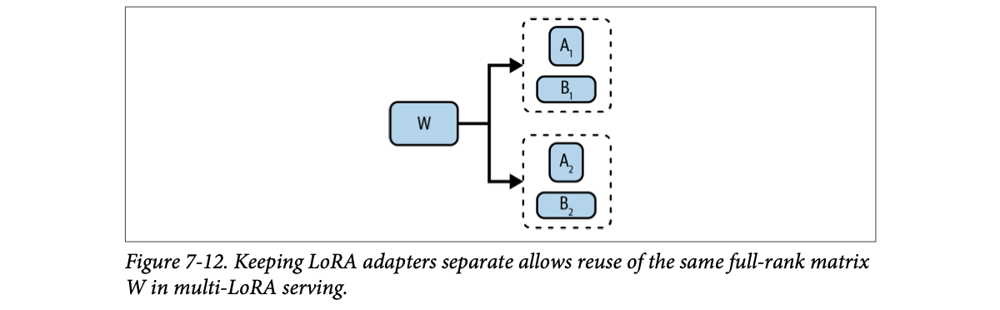
How to read this figure. One shared full-rank W on the left branches to two adapters, (A₁, B₁) and (A₂, B₂). Each adapter plus the same W makes a different finetuned model. Only the small boxes differ per model.
Option 2's latency comes with a big storage win. Say you finetune a model per customer with LoRA: 100 customers, 100 finetuned models sharing one base. Option 1 stores 100 full W′ matrices; option 2 stores one W and 100 small (A, B) pairs.
W is 4096 × 4096 = 16.8M parameters. Rank 8: A + B = 4096 × 8 × 2 = 65,536.
Option 2 also makes switching tasks faster. Serving customer X and need to switch to Y? Load only Y's small adapter, not a full weight matrix, which cuts loading time a lot. There are optimisations to reduce the added latency of separate adapters (the book's GitHub repo has a walkthrough).
Multi-LoRA serving makes it easy to combine specialised models: instead of one big model for all tasks, one adapter per task. Apple (2024) used multiple LoRA adapters to adapt the same 3B base model to different iPhone features, and used quantization to shrink the base and adapters further so all of it runs on-device.
Adapters are modular, so they can be shared and reused: there are public finetuned LoRA adapters you can use like pre-trained models, on Hugging Face (footnote 26: search tags "adapter", "peft" or "LoRA") or AdapterHub.
LoRA doesn't perform as strongly as full finetuning. It's also harder to do than full finetuning because it means modifying the model's implementation, which needs architecture knowledge and coding skill. That's usually only a problem for less popular base models: PEFT frameworks such as Hugging Face PEFT, Axolotl, unsloth and LitGPT likely support LoRA for popular models out of the box.
A thali restaurant with one big kitchen (base model) and small spice boxes for each regional style (adapters): Gujarati, Punjabi, Kerala. The cook keeps the same dal and rice and just swaps the spice box per order. Merging is pre-mixing each style into separate full pots: faster to serve one style, wasteful for many.
Where it breaks: swapping spice boxes is instant; adapter swapping still costs some memory traffic and compute.
"Design per-tenant finetuned models for 100 B2B customers." Say: "LoRA adapters per tenant on a shared base model. Store one base plus ~100 small adapters (e.g. 16.8M + 6.5M parameters instead of 1.68B for one 4096² matrix at r=8), route requests to the tenant's adapter, batch across tenants with a multi-LoRA server. If one tenant dominates traffic, give them a merged model for zero added latency." This maps directly to an LLM gateway in front of a voice-agent platform.
Batching and serving optimisations: Ch.9. Deployment patterns: LLM Engineer's Handbook Ch.10. Merging adapters: plate 27, plate 31.
LoRA's rise produced many variants. Some try to cut LoRA's trainable parameters further. But Table 7-6 shows the adapter's memory is tiny compared with the model's weights, so shrinking LoRA parameters saves only a small percentage.
| Model | Weights memory (16 bits) | LoRA trainable params (r=2, query & key matrices) | LoRA adapter memory (16 bits) |
|---|---|---|---|
| Llama 2 (13B) | 26 GB | 3.28M | 6.55 MB |
| GPT-3 (175B) | 350 GB | 18.87M | 37.7 MB |
Note: the GPT-3 count (18.87M) equals rank 2 on all four attention matrices (plate 22), and the Llama 2 count also matches four matrices at rank 2 (see the counter on plate 20). The point stands either way: megabytes vs hundreds of gigabytes.
A better lever is to quantize the model's weights, activations and/or gradients during finetuning. An early promising quantized LoRA is QLoRA (Dettmers et al., 2023). (Footnote 27: many labs work on quantized LoRA without publishing.) Original LoRA stores weights in 16 bits during finetuning. QLoRA stores them in 4 bits but dequantizes (converts back) to BF16 when computing the forward and backward passes.
The authors finetuned many models, including Llama 7B to 65B, in 4-bit mode. The resulting family, Guanaco, did well on public benchmarks and comparative evaluation. Table 7-7 shows Elo ratings in May 2023 with GPT-4 as judge: Guanaco 65B didn't beat GPT-4, but was often preferred over ChatGPT.
| Model | Size | Elo |
|---|---|---|
| GPT-4 | - | 1348 ± 1 |
| Guanaco 65B | 41 GB | 1022 ± 1 |
| Guanaco 33B | 21 GB | 992 ± 1 |
| Vicuna 13B | 26 GB | 974 ± 1 |
| ChatGPT | - | 966 ± 1 |
| Guanaco 13B | 10 GB | 916 ± 1 |
| Bard | - | 902 ± 1 |
| Guanaco 7B | 6 GB | 879 ± 1 |
Main limitation: NF4 quantization is expensive. QLoRA cuts memory but may increase training time because of the extra quantize/dequantize steps. Quantized LoRA is active research; others include QA-LoRA (Xu et al., 2023), ModuLoRA (Yin et al., 2023) and IR-QLoRA (Qin et al., 2024).
Full FT: 16-bit weights + Adam (3 values × 2 bytes per param). LoRA: 16-bit frozen weights + adapters with Adam. QLoRA: 4-bit (0.5 byte) weights + adapters. Activations, paging and NF4 constants are ignored, so real numbers are higher.
Storing your winter clothes vacuum-packed (4-bit) in the loft, and unpacking a set only when you wear it (dequantize to BF16 for compute). Saves cupboard space; costs time each time you unpack. Paged optimizers are your neighbour's spare room for overflow when the cupboard is full.
Where it breaks: unpacked clothes are as good as new; dequantized weights carry small rounding errors.
Once LoRA has made trainable parameters tiny, the frozen base weights dominate memory. Quantizing them to 4 bits cuts that part by 4× vs 16-bit. NF4 places its 16 levels where normally distributed weights are dense (near zero), so it wastes fewer levels on rare large values. Compute still happens in BF16, so gradients for A and B stay accurate.
"What does QLoRA add on top of LoRA?" Say: "LoRA makes trainable params tiny, so the frozen base weights dominate memory. QLoRA stores those in 4-bit NF4, dequantizes to BF16 for each forward/backward computation, and uses paged optimizers to spill to CPU. That let a 65B model finetune on one 48 GB GPU. Trade-off: quantize/dequantize overhead can make training slower."
Number formats: plate 13. QLoRA in practice: Hands-On LLMs Ch.12, LLM Engineer's Handbook Ch.5. Elo-style comparative evaluation: Ch.3.
Finetuning makes a custom model by altering one model; model merging makes one by combining several. It's more flexible: take two available models and merge them into a new, hopefully more useful one. You can finetune any or all of them before merging. The merged model doesn't have to be finetuned further, though that often helps. Without finetuning, merging can be done without GPUs, which makes it attractive to indie developers with little compute.
The goal: one model that gives more value than using the constituents separately. The value can be:
An important use case. Without merging, you'd usually do one of:
Merging offers a third way: finetune on each task separately, in parallel, then merge. Each model learns its task better, and since nothing is sequential, there's less risk of catastrophic forgetting.
Merging helps deploy to phones, laptops, cars, smartwatches and warehouse robots, where memory is limited. Instead of squeezing several task models onto a device, merge them into one multi-task model needing much less memory.
On-device is necessary when data can't leave the device (often privacy) or internet is limited or unreliable. It can also cut inference cost: the more compute users' devices do, the less you pay data centres. (Footnote 28: her book Designing Machine Learning Systems has a section "ML on the Cloud and on the Edge".)
Merging is one way to do federated learning (McMahan et al., 2016): many devices train the same model on separate data. Deploy model X to many devices; each copy keeps learning from its device's data. Later, merge the copies into a new base model that contains everything they learned.
Three cousins each learn one dish in parallel (biryani, dosa, rasgulla) from different relatives, then write one family recipe book together. Compare: one cousin learning all three at once (simultaneous, slow), or learning them one after another and forgetting the first (sequential).
Where it breaks: a recipe book just stacks recipes; merged weights blend, which can interfere.
"How would you build one model that does three tasks?" Say: "Options: train on a mixed dataset (needs more data), train sequentially (risks catastrophic forgetting), or finetune separate copies (or LoRA adapters) per task in parallel and merge them. Merging also suits on-device deployment and federated learning. I'd validate the merged model on every task's eval set."
Combining models for better performance started with ensembles. Wikipedia defines ensembling as combining multiple learning algorithms to predict better than any of them alone. The difference: merging mixes parameters; ensembling combines only outputs and keeps each model intact.
In an ensemble, three models might each answer a query, and a final answer comes from a majority vote or another trainable module. (Footnote 29: more on ensembles in Designing Machine Learning Systems.) Ensembles usually improve quality but cost more at inference: multiple calls per request.
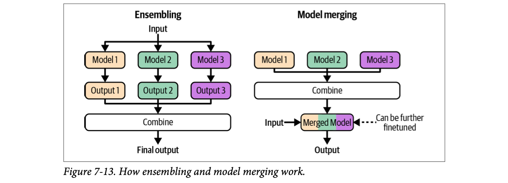
How to read this figure. Left (ensembling): the input fans out to three models; each produces an output; outputs are combined into the final output. Three inference runs. Right (merging): the three models are combined once, ahead of time into one merged model (colours blended); at request time the input goes through one model. The dotted arrow says the merged model can be finetuned further.
Just as ensembles once topped leaderboards, many models at the top of Hugging Face's Open LLM Leaderboard are merged models.
Many merging techniques are experimental and may become outdated as the theory matures, so Huyen covers high-level approaches, not individual techniques. They differ in how parameters are combined: summing, layer stacking, and concatenation.
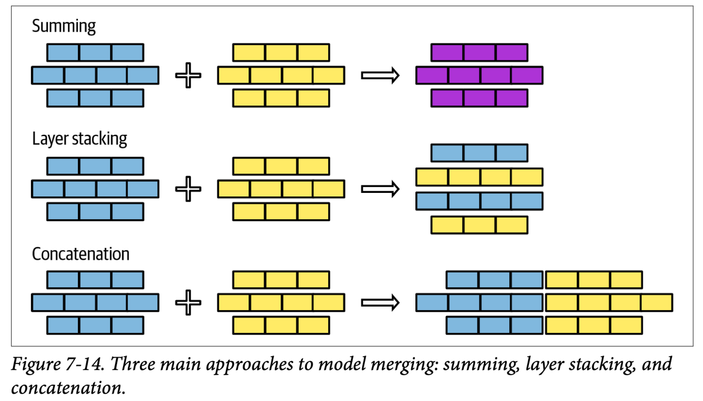
How to read this figure. Each stack of bricks is a model; each row a layer. Summing: blue + yellow → purple of the same shape (values blended, size unchanged). Layer stacking: rows taken from each model and stacked → a taller model (more layers). Concatenation: rows placed side by side → wider layers (parameter count adds up).
You can mix approaches, e.g. sum some layers and stack others.
Ensembling is asking three doctors for opinions on every visit and taking the majority: reliable, but three consultation fees. Merging is training one doctor who absorbed all three's know-how: one fee per visit.
Where it breaks: you can't literally average three doctors' brains; with neural networks of the same shape, you sometimes can.
"Ensembling vs model merging?" Say: "Ensembling runs several models and combines outputs (vote, weighted average), so inference cost multiplies. Merging combines parameters once, offline, into one model, so serving costs one model. Merging approaches: summing (same shape), layer stacking (deeper), concatenation (wider)."
Summing adds the weight values of the constituent models. Two methods: linear combination and spherical linear interpolation (SLERP). If models' parameters are on different scales (one's values much larger), rescale them first so they're in the same range.
Linear combination covers the average and the weighted average. For models A and B with weights wA and wB:
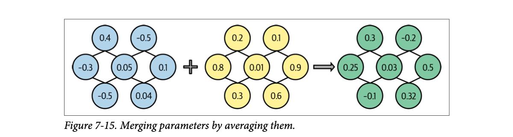
How to read this figure. Same-shaped layers from two models (blue, yellow), each node a parameter. With wA = wB = 1, each green value is the plain average of the matching blue and yellow values: (0.4 + 0.2)/2 = 0.3, (−0.5 + 0.1)/2 = −0.2, (0.1 + 0.9)/2 = 0.5, and so on.
Linear combination works surprisingly well for something so simple. (Footnote 30: averaging works for embeddings too: average word embeddings to get a sentence embedding. Huyen says she couldn't believe averaging "just works" when she started in ML.) The idea of linearly combining models goes back to the early 1990s (Perrone, 1993) and is often used in federated learning (Wang et al., 2020).
You can combine entire models or parts. Model soups (Wortsman et al., 2022) averaged the full weights of several finetuned models and improved accuracy without increasing inference time. More commonly, people combine specific components, such as adapters.
Linear combination works best for models finetuned from the same base. Then you can think in task vectors (also called delta parameters): finetuned model minus base model = a vector capturing the essence of the task. With LoRA, you can build the task vector from the LoRA weights.
Task vectors enable task arithmetic (Ilharco et al., 2022): add two task vectors to combine capabilities, or subtract one to remove a capability. Subtraction can remove undesirable behaviours, such as invasive capabilities like facial recognition, or biases picked up in pre-training.
Pretend the whole model is 2 numbers. Base = (1.0, 1.0). Finetune on "Hindi" → (1.6, 1.1); on "SQL" → (0.9, 1.8). Task vectors are the differences.
Linear combination is easiest when components share architecture and size, but it can work for models that don't: if one model's layer is larger, project one or both layers into the same dimension.
Some propose aligning models before averaging so that functionally related parameters get averaged together: "Model Fusion via Optimal Transport" (Singh and Jaggi, 2020), "Git Re-Basin: Merging Models Modulo Permutation Symmetries" (Ainsworth et al., 2022), "Merging by Matching Models in Task Parameter Subspaces" (Tam et al., 2023). It makes sense, but alignment is hard, so it's less common than naive linear combination.
Two family recipes for garam masala, each a tweak of grandma's original. Subtract grandma's recipe from each to see each person's "twist" (task vector). Add both twists to grandma's base and you get a masala with both improvements. Subtract a twist to remove an unwanted flavour.
Where it breaks: flavours can clash; task vectors can interfere too (plate 29).
Models finetuned from the same base start at the same point in weight space and usually move only a little, so they stay in a region where interpolating between them still gives a working model. Models trained from different random starts may have equivalent neurons in different orders (permutation symmetry), which is why naive averaging of unrelated models fails and alignment methods like Git Re-Basin exist.
"What's a task vector?" Say: "Finetuned weights minus base weights: the delta that encodes a task. Because models finetuned from the same base live near each other, you can add task vectors to combine skills or subtract one to remove a behaviour (task arithmetic, Ilharco et al.). Model soups average whole finetuned models for accuracy gains at no inference cost."
SLERP: plate 28. Pruning task vectors (TIES/DARE): plate 29. Embedding averaging: Hands-On LLMs Ch.2.
SLERP (Spherical LinEar inteRPolation) is the other common summing method, named after the math operator. Interpolation means estimating unknown values from known ones; here the unknown is the merged model and the knowns are the constituent models. Linear combination is one interpolation technique; SLERP is another.
The formula is mathy and merging tools implement it, so Huyen gives the intuition: think of each component (vector) to merge as a point on a sphere. Draw the shortest path between the two points along the sphere's surface, like the shortest route between two cities on Earth. The merged vector is a point on that path. Where exactly depends on the interpolation factor, between 0 and 1: below 0.5 the result is closer to the first vector (the first task vector contributes more); 0.5 is exactly halfway.
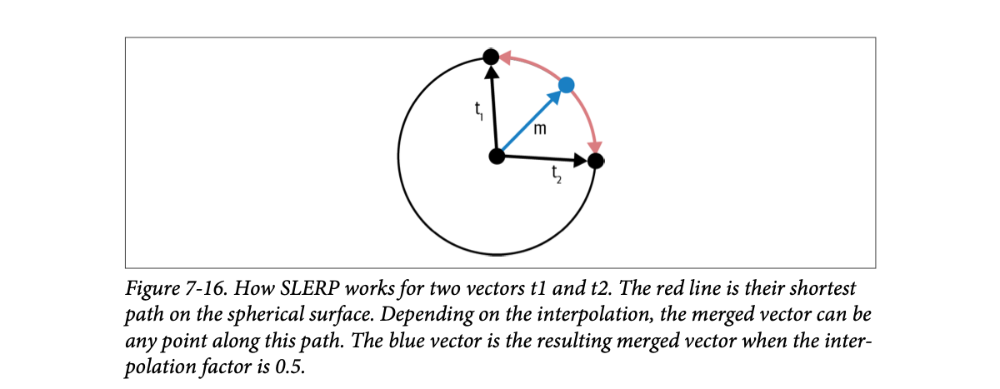
How to read this figure. Two black vectors t₁ (up) and t₂ (right) from the centre. The red arc is the shortest path between their tips along the circle. The blue vector m points to the arc's midpoint: the merge at factor 0.5. Note m has the same length as t₁ and t₂, unlike a straight-line average, which would be shorter.
SLERP as an operation is defined for only two vectors, so you merge two at a time. For more, you can do it sequentially: merge A with B, then the result with C.
Flying from Delhi to New York: the shortest route curves over the globe (great circle), not a straight line through the Earth. SLERP moves along that curve; a linear average would tunnel through the Earth and land you somewhere "shorter" than the surface.
Where it breaks: model weights live in millions of dimensions; the sphere is a picture, not literal geography.
When two vectors point in quite different directions, their straight-line average has a smaller length (norm) than either. SLERP interpolates the angle instead, preserving magnitude, which (Beyond the book) is a commonly cited reason it can keep merged weights better behaved.
"Linear merge vs SLERP?" Say: "Linear: weighted average of parameters, works for any number of models, can shrink vector norms when models disagree. SLERP: interpolate along the arc between two vectors by a factor t in [0,1], preserving magnitude; defined for two models, so you chain it for more. Tools like mergekit implement both." (mergekit is Beyond the book.)
Finetuning nudges many parameters, but most changes are minor and don't really help the task. (Footnote 31: the assumption is that the parameters that change most are the most crucial for the task.) Changes that don't contribute are redundant.
In "TIES-Merging: Resolving Interference When Merging Models", Yadav et al. (2023) showed you can reset a large portion of task-vector parameters with little loss. Resetting means setting the finetuned parameter back to the base model's value, i.e. setting that task-vector entry to zero.
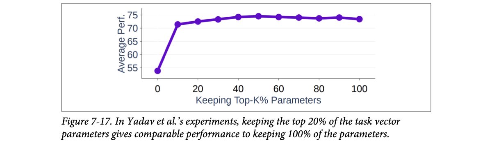
How to read this figure. X axis: what percentage of task-vector parameters you keep (the largest changes). Y axis: average performance. Keeping 0% (= base model) scores about 54. Keeping just 10% jumps to about 71; 20% about 72.5; the curve is basically flat (around 73–74.5) from there to 100%. Most of the gain lives in a small fraction of parameters.
Redundant parameters don't hurt a single model, but can hurt the merged model by interfering with other tasks. Merging techniques like TIES (Yadav et al., 2023) and DARE (Yu et al., 2023) first prune redundant parameters from task vectors, then merge. Both papers show this can significantly improve merged-model quality. The more models you merge, the more pruning matters, because there are more chances for one task's redundant parameters to interfere with others. (Footnote 32: TIES = "TrIm, Elect Sign, and merge"; DARE = "Drop And REscale"; Huyen admits the abbreviations pain her too. Footnote 33: pruned task vectors become sparse, but the finetuned model doesn't; pruning here is for performance, not to save memory or latency.)
Two 12-entry task vectors. "Keep top-K%" keeps only the largest-magnitude entries in each and zeroes the rest. Then we average. Red cells = the two tasks pushed in opposite directions (interference).
Two editors mark changes on the same document. Each makes a few big important edits and dozens of trivial comma tweaks. If you merge everything, the comma tweaks clash. Keep only each editor's big edits and the merged document is cleaner.
Where it breaks: sometimes small edits matter; "biggest change = most important" is an assumption (footnote 31).
"Why do TIES and DARE prune before merging?" Say: "Most finetuning deltas are tiny and redundant; Yadav et al. found keeping the top 20% of a task vector matches keeping 100%. Those redundant deltas interfere when you merge several models, so you trim them (TIES also resolves sign conflicts; DARE drops randomly and rescales) and then merge. It's about merged quality, not memory."
In layer stacking you take layers from one or more models and stack them, e.g. layer 1 from model 1 and layer 2 from model 2. Also called passthrough or frankenmerging. It can create models with unique architectures and parameter counts. Unlike summing, layer-stacked models usually need further finetuning to perform well.
An early success: Goliath-120B (alpindale, 2023), merged from two finetuned Llama 2-70B models, Xwin and Euryale. It took 72 of the 80 layers from each and merged them.
Layer stacking can train mixture-of-experts (MoE) models ("Sparse Upcycling: Training Mixture-of-Experts from Dense Checkpoints", Komatsuzaki et al., 2022). Instead of training an MoE from scratch, take a pre-trained model and copy certain layers or modules several times. Add a router that sends each input to the most suitable copy. Then train the merged model and the router together.
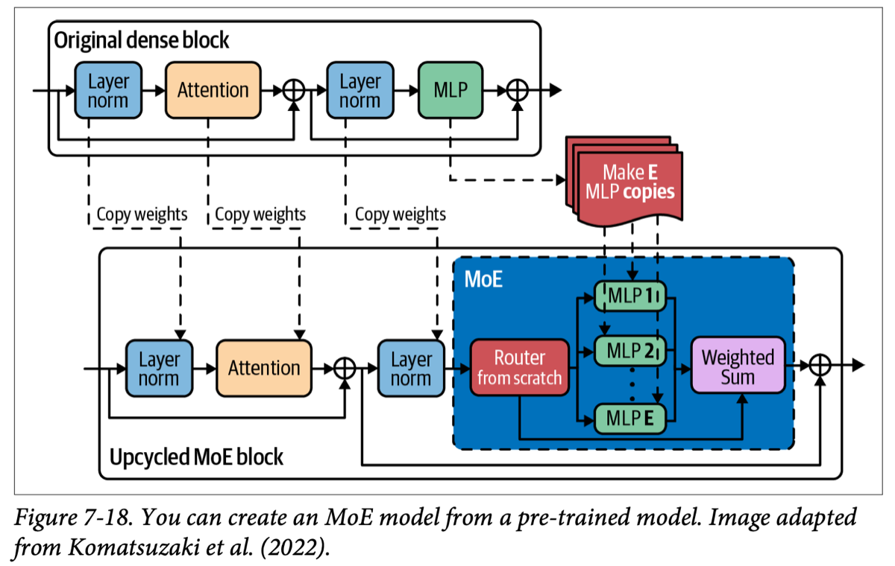
How to read this figure. Top: one dense transformer block: layer norm → attention → add → layer norm → MLP → add. Bottom: the upcycled MoE block. Layer norms and attention are copied as-is (dashed "copy weights" arrows). The MLP is copied E times to make experts MLP 1 … MLP E. A router (red, trained from scratch) decides which experts handle each input, and their outputs are combined by a weighted sum.
Komatsuzaki et al. showed upcycled models can beat MoE models trained from scratch. With this approach, Together AI mixed six weaker open-source models into Mixture-of-Agents, comparable to OpenAI's GPT-4o on some benchmarks (Wang et al., 2024).
Model upscaling studies how to make bigger models with fewer resources. Say your team trained a model to fit a 40 GB GPU, then got an 80 GB machine. Instead of training a bigger model from scratch, use layer stacking to grow the existing one.
One method is depthwise scaling. Kim et al. (2023) made SOLAR 10.7B from one 7B, 32-layer model:
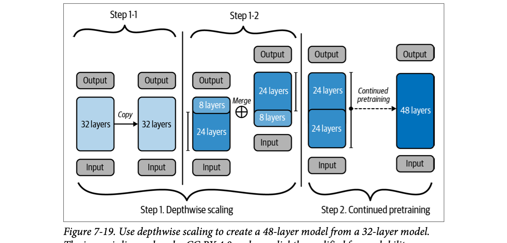
How to read this figure. Step 1-1: copy the 32-layer model. Step 1-2: in the first copy, the top 8 layers are set apart from the lower 24; in the second copy, the bottom 8 are set apart from the upper 24; the two are combined (⊕, "Merge"). The result stacks 24 + 24 = 48 layers. Step 2: continued pre-training on the 48-layer model. (The text describes the 16 boundary layers as "summed"; the figure draws the two 24-layer blocks being joined. Either way, the book's count is 32 × 2 − 16 = 48.)
Rough size estimate assumes parameters scale with layer count (ignores embeddings), so it's modelled: SOLAR is 10.7B, and 7 × 48/32 = 10.5B.
Building a taller apartment block by placing a copy of your existing 32-floor building on top of itself, removing a few floors at the joint so the plumbing lines up, then doing interior work (continued pre-training) so it's livable. MoE upcycling is like turning one kitchen into several specialist kitchens with a head waiter (router) sending each order to the right one.
Where it breaks: buildings don't need retraining; stacked layers do, because layer 25 never expected layer 9's output.
"What's sparse upcycling?" Say: "Turn a dense model into an MoE by copying its MLP into E experts, keeping attention and norms, adding a router trained from scratch, then continuing training. It reuses pre-trained compute and was shown to beat MoEs trained from scratch. Related: depthwise upscaling (SOLAR 10.7B from a 32-layer 7B model, 48 layers) and frankenmerges like Goliath-120B."
MoE architecture: Ch.2, Hands-On LLMs Ch.3. Concatenation: plate 31.
Instead of adding parameters together, you can concatenate them. The merged component's parameter count is the sum of the parts. Merge two LoRA adapters of ranks r₁ and r₂ and the merged adapter has rank r₁ + r₂.
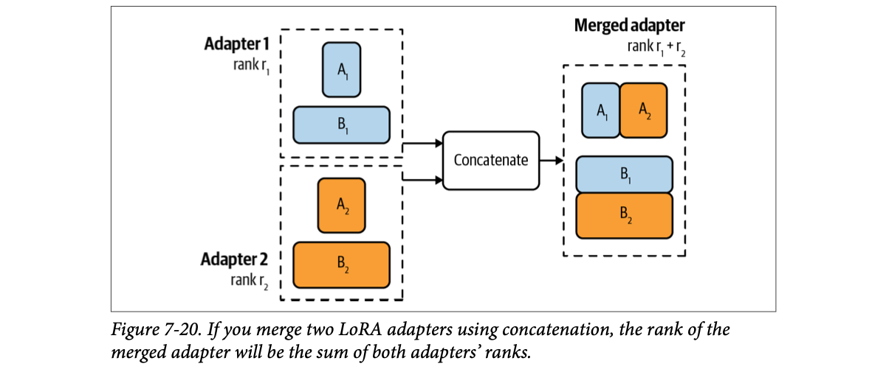
How to read this figure. Adapter 1 (A₁, B₁, rank r₁) and adapter 2 (A₂, B₂, rank r₂) go into "Concatenate". Output: A₁ and A₂ placed side by side (more columns) and B₁ stacked on B₂ (more rows), so the merged adapter has rank r₁ + r₂. (Beyond the book: [A₁ A₂]·[B₁; B₂] = A₁B₁ + A₂B₂, so it equals using both adapters at once.)
Concatenation is not recommended: it doesn't reduce memory compared with serving the models separately. It might perform better, but the gain may not be worth the extra parameters. (Footnote 34: Huyen debated including it at all, and kept it for completeness.)
Combining two tiffin boxes by taping them together. Nothing is lost, but you're carrying exactly as much as before. Summing is like transferring both meals into one box: lighter, but some flavours mix.
Where it breaks: the taped boxes are still two separate meals inside; a concatenated adapter is mathematically one bigger adapter.
"Can you merge two LoRA adapters?" Say: "Yes: sum/average them (same rank, possibly with TIES/DARE pruning), which keeps size constant but can interfere, or concatenate, which gives rank r₁+r₂ and exactly preserves both, but saves no memory, so it's rarely worth it."
The last section is practical. Deciding whether to finetune, getting data, and maintaining models are hard; the actual finetuning is more straightforward. You choose three things: a base model, a finetuning method, and a framework.
Chapter 4's model-selection criteria apply to finetuning too: model size, licenses, benchmark performance. Early on, while exploring feasibility, start with the most powerful model you can afford. If it struggles, weaker ones will likely do worse. If it works, explore weaker models, using the first as the benchmark.
Starting models vary by project. OpenAI's finetuning best-practices document gives two development paths:
Since finetuning usually follows prompt experiments, by then you should understand different models' behaviours well; plan your path from that.
Before a long road trip, you test the car around the colony first (cheapest model to test code), then a short highway run (middling model to test data), then the full trip with the best car, and finally compare mileage across cars (price/performance frontier).
Where it breaks: cars don't generate their own training data; the distillation path does exactly that.
"How would you run your first finetuning project?" Say: "Smoke-test the pipeline on the smallest model (checkpoints save, loss logs), sanity-check data on a mid model (loss should drop with more data), push the best model, then map price vs performance across sizes. Or distill: finetune a strong model on a small set, use it to generate data, train a cheap model. Start with LoRA via a framework like unsloth or Axolotl; go full finetuning only with thousands-plus examples."
Model selection: Ch.4. Data synthesis/distillation: Ch.8. Hands-on with frameworks: LLM Engineer's Handbook Ch.5, Hands-On LLMs Ch.12.
Many hyperparameters can improve finetuning efficiency, depending on the base model and method; check the docs of your base model or framework. Here are the ones that come up most.
How fast parameters change each step. If learning is walking toward a goal, the learning rate is the step size: too small and you take forever; too big and you overshoot and may never converge.
A toy loss with some noise, trained with gradient descent. Curves are simulated, not real finetuning runs.
How many examples the model learns from in each step before updating weights. Too small, such as fewer than eight, can make training unstable. (Footnote 36: this is widely accepted but Huyen couldn't find a good explanation of why; she invites references.) Larger batches aggregate signals from more examples for more stable, reliable updates.
Generally, larger batches let the model go through examples faster, but need more memory, so batch size is limited by hardware. That's the cost-vs-efficiency trade-off: more expensive compute allows faster finetuning.
Compute is still a bottleneck: often models are so big and memory so tight that only small batches fit, causing unstable updates. Fix: instead of updating after each batch, accumulate gradients over several batches and update once you have enough reliable gradients: gradient accumulation. (Footnote 37: Huyen couldn't find the first paper; it's mentioned as early as 2016 in "Ako: Decentralised Deep Learning with Partial Gradient Exchange" (Watcharapichat et al.), and the idea seems to come from distributed training, where gradients from different machines are accumulated.)
When compute cost isn't the main concern, experiment with batch sizes to find the best-performing one.
An epoch is one pass over the training data; the number of epochs is how many times each example is trained on. Small datasets may need more: millions of examples → 1–2 epochs may be enough; thousands → may keep improving for 4–10 epochs.
Compare training and validation loss: if both still steadily decrease, more epochs (and data) may help. If training loss decreases but validation loss increases, the model is overfitting; try fewer epochs.
In instruction finetuning each example has a prompt and a response, and both can contribute to the loss. But at inference, users supply prompts and the model only generates responses, so response tokens should count more than prompt tokens.
The prompt loss weight sets how much prompts count relative to responses. 100%: prompts count as much as responses (the model learns equally from both). 0%: it learns only from responses. Typically the default is 10%: learn a little from prompts, mostly from responses.
Learning to drive in a ghat road. Learning rate is how hard you turn the wheel per correction: too hard and you zigzag, too gentle and you drift off the curve. Batch size is how many road signs you read before correcting. Epochs are how many times you drive the same route: a few times helps, but drive it 50 times and you've memorised that route instead of learning to drive (overfitting). Prompt loss weight: the instructor grades your driving (response), not how well you repeated the directions (prompt).
Where it breaks: humans generalise from one route much better than models do from few examples.
"Your finetuning loss is spiky. What do you check?" Say: "Learning rate first: spiky usually means too high, so lower it or add a decay schedule; typical range 1e-7 to 1e-3, often 0.1–1× the end-of-pretraining LR. Then batch size: below ~8 is unstable, so use gradient accumulation if memory is tight. Watch train vs validation loss to pick epochs (1–2 for millions of examples, 4–10 for thousands) and stop when validation rises. For instruction data, keep prompt loss weight low (default ~10%)."
Backprop and optimizers: plate 10. Memory limits on batch size: plate 12. SFT training configs: LLM Engineer's Handbook Ch.5.
Huyen calls this the hardest chapter to write after the evaluation ones: it spans old ideas (transfer learning) and new (PEFT), fundamental (low-rank factorization) and experimental (model merging), mathematical (memory calculation) and tactical (hyperparameter tuning).
| Term | Meaning |
|---|---|
| Finetuning | Further training some or all of a pre-trained model's weights for a task. |
| Transfer learning | Reusing knowledge from one task to learn a related task faster. |
| Sample efficiency | Learning a behaviour from fewer examples. |
| Continued pre-training | Self-supervised finetuning on cheap, task-related raw data. |
| Infilling finetuning | Training the model to fill in blanks (useful for editing, debugging). |
| SFT / preference finetuning | Training on (instruction, response) pairs / on (instruction, winner, loser) comparisons. |
| Distillation | Training a small model to imitate a bigger model, using data it generates. |
| Alignment tax | Name some people use for finetuning hurting other tasks (confusable with preference-alignment cost). |
| Information vs behaviour failure | Wrong/outdated facts (→ RAG) vs wrong format/style/relevance (→ finetuning). |
| Trainable / frozen parameter | Updated during finetuning / kept fixed. |
| Forward / backward pass | Compute the output / compute gradients and update weights. |
| Loss, gradient, optimizer | Error vs ground truth; each parameter's contribution to it; rule for how much to change each parameter (SGD, Adam). |
| Optimizer states | Extra values per trainable parameter (0 SGD, 1 momentum, 2 Adam). |
| Gradient checkpointing | Recompute activations instead of storing them: less memory, slower. |
| FP32 / FP16 / BF16 / TF32 | Float formats; sign + range (exponent) + precision (significand) bits. |
| INT8 / INT4 | Integer (fixed-point) formats with 8 / 4 bits. |
| Quantization | Converting to fewer bits (strictly: to integers). |
| PTQ / QAT | Quantize after training / simulate low precision during training. |
| Mixed precision / AMP | Different precisions for different values; automatic choice by the framework. |
| CPU offloading | Moving excess memory from GPU to CPU (e.g. DeepSpeed). |
| Partial finetuning | Training only some layers; parameter-inefficient. |
| PEFT | Parameter-efficient finetuning: near full-finetuning quality with orders of magnitude fewer trainable params. |
| Adapter (additive) methods | Add small trainable modules (Houlsby adapters, LoRA, BitFit, IA3, LongLoRA). |
| Soft prompt | Trainable continuous vectors fed with the input (prompt tuning, prefix-tuning, P-Tuning). |
| LoRA, rank r, α | W′ = W + (α/r)·A·B with A n×r, B r×m; only A, B trained. |
| Intrinsic dimension | The small number of directions actually needed to learn a task. |
| Multi-LoRA serving | One shared base W with many swappable adapters. |
| QLoRA, NF4, paged optimizers | LoRA with 4-bit NormalFloat base weights and CPU-GPU paging. |
| Model merging | Combining parameters of several models into one. |
| Catastrophic forgetting | Losing old skills when trained on a new task. |
| Federated learning | Many devices train copies on local data; copies get merged. |
| Ensembling | Combining outputs of several models at inference. |
| Task vector / task arithmetic | Finetuned minus base weights; add/subtract to combine/remove skills. |
| SLERP | Interpolating two vectors along the sphere's shortest path. |
| TIES / DARE | Prune redundant task-vector entries before merging. |
| Layer stacking (frankenmerge) | Building a model from layers of others; includes MoE upcycling and depthwise upscaling. |
| Concatenation | Joining parameters side by side; LoRA ranks add. |
| Learning rate (schedule) | Step size (and how it changes during training). |
| Batch size / gradient accumulation | Examples per update / summing gradients over several batches before updating. |
| Epoch | One pass over the training data. |
| Prompt loss weight | How much prompt tokens count in the loss (default ~10%). |
The model's weights. Most often to improve instruction following, especially specific output styles and formats.
Self-supervised finetuning on cheap task-related raw data (e.g. legal documents) before expensive supervised finetuning.
It can degrade other tasks; it needs annotated data; it needs training expertise; it needs serving infrastructure and ongoing maintenance as new base models appear. Also: prompting is often not tried systematically first.
RAG: it's an information failure (the model lacks private data). Finetuning is for form, RAG for facts.
On current-events QA, base model + RAG beat finetuned + RAG; on MMLU, RAG on top of finetuning helped only 43% of the time.
13B × 2 = 26 GB weights, × 1.2 ≈ 31.2 GB.
Each trainable parameter has a gradient plus 2 Adam states = 3 values × 2 bytes × 13B = 78 GB.
FP16 → INF (max ~65,504, only 5 exponent bits). BF16 → 123,392 (8 exponent bits = FP32's range, but only 7 precision bits).
Training in low precision (e.g. Character.AI's INT8). QAT simulates low precision while computing in high precision, so it doesn't reduce (and can increase) training time.
It needs many trainable parameters (about 25% of BERT-large on GLUE) to match full finetuning, while adapters got within 0.4% with 3%.
12,288 × 2 × 2 × 4 = 196,608 per layer, × 96 = 18,874,368. A·B can be merged into W before serving, so no extra layers.
Keep separate (multi-LoRA): one base + 100 small adapters (e.g. 23.3M vs 1.68B params for a 4096² matrix at r=8), and faster switching; accept small latency overhead.
4-bit NF4 storage of base weights, dequantization to BF16 for compute, paged optimizers. Downside: quantize/dequantize overhead can slow training.
Each learns its task well in parallel and there's no sequential training, so less catastrophic forgetting. Pruning (TIES/DARE) reduces interference further.
Overfitting: use fewer epochs (stop around where validation was lowest), or get more data.